<!DOCTYPE html>


  <html lang="en">
    

    <head>
      <meta charset="utf-8" />
        
      <meta
        name="viewport"
        content="width=device-width, initial-scale=1, maximum-scale=1"
      />
      <title>图彩票 |  小熊的小站</title>
  <meta name="generator" content="hexo-theme-ayer">
      
      <link rel="shortcut icon" href="/favicon.ico" />
       
<link rel="stylesheet" href="/dist/main.css">

      
<link rel="stylesheet" href="/css/fonts/remixicon.css">

      
<link rel="stylesheet" href="/css/custom.css">
 
      <script src="https://cdn.staticfile.org/pace/1.2.4/pace.min.js"></script>
       

<script type="text/javascript">
(function(i,s,o,g,r,a,m){i['GoogleAnalyticsObject']=r;i[r]=i[r]||function(){
(i[r].q=i[r].q||[]).push(arguments)},i[r].l=1*new Date();a=s.createElement(o),
m=s.getElementsByTagName(o)[0];a.async=1;a.src=g;m.parentNode.insertBefore(a,m)
})(window,document,'script','//www.google-analytics.com/analytics.js','ga');

ga('create', '454934039', 'auto');
ga('send', 'pageview');

</script>


 
<script>
var _hmt = _hmt || [];
(function() {
	var hm = document.createElement("script");
	hm.src = "https://hm.baidu.com/hm.js?71ee62302f36ca8f840077a641705255";
	var s = document.getElementsByTagName("script")[0]; 
	s.parentNode.insertBefore(hm, s);
})();
</script>


      <link
        rel="stylesheet"
        href="https://cdn.jsdelivr.net/npm/@sweetalert2/theme-bulma@5.0.1/bulma.min.css"
      />
      <script src="https://cdn.jsdelivr.net/npm/sweetalert2@11.0.19/dist/sweetalert2.min.js"></script>

      <!-- mermaid -->
      
      <style>
        .swal2-styled.swal2-confirm {
          font-size: 1.6rem;
        }
      </style>
    </head>
  </html>
</html>


<body>
  <div id="app">
    
      
    <main class="content on">
      <section class="outer">
  <article
  id="post-20240521"
  class="article article-type-post"
  itemscope
  itemprop="blogPost"
  data-scroll-reveal
>
  <div class="article-inner">
    
    <header class="article-header">
       
<h1 class="article-title sea-center" style="border-left:0" itemprop="name">
  图彩票
</h1>
 

      
    </header>
     
    <div class="article-meta">
      <a href="/2024/20240521/" class="article-date">
  <time datetime="2024-05-21T07:42:47.000Z" itemprop="datePublished">2024-05-21</time>
</a>   
<div class="word_count">
    <span class="post-time">
        <span class="post-meta-item-icon">
            <i class="ri-quill-pen-line"></i>
            <span class="post-meta-item-text"> Word count:</span>
            <span class="post-count">6.7k</span>
        </span>
    </span>

    <span class="post-time">
        &nbsp; | &nbsp;
        <span class="post-meta-item-icon">
            <i class="ri-book-open-line"></i>
            <span class="post-meta-item-text"> Reading time≈</span>
            <span class="post-count">30 min</span>
        </span>
    </span>
</div>
 
    </div>
      
    <div class="tocbot"></div>


  
    <div class="article-entry" itemprop="articleBody">
       
  <link rel="stylesheet" type="text&#x2F;css" href="https://cdn.jsdelivr.net/npm/hexo-tag-hint@0.3.1/dist/hexo-tag-hint.min.css"><p>本文将介绍一系列的图彩票论文。</p>
<hr>
<h2 id="《a-unified-lottery-ticket-hypothesis-for-graph-neural-networks-2021ICML-pdf》"><a href="#《a-unified-lottery-ticket-hypothesis-for-graph-neural-networks-2021ICML-pdf》" class="headerlink" title="《a unified lottery ticket hypothesis for graph neural networks(2021ICML).pdf》"></a>《a unified lottery ticket hypothesis for graph neural networks(2021ICML).pdf》</h2><h3 id="相关工作"><a href="#相关工作" class="headerlink" title="相关工作"></a>相关工作</h3><h4 id="Lottery-Ticket-Hypothesis"><a href="#Lottery-Ticket-Hypothesis" class="headerlink" title="Lottery Ticket Hypothesis"></a>Lottery Ticket Hypothesis</h4><p>该论文首先提到了ICLR 2019最佳论文:The Lottery Ticket Hypothesis: Finding Sparse, Trainable Neural Networks。该论文提出了彩票假说：密集的、随机初始化的、前馈网络包含子网络（中奖票），这些子网络在孤立地训练时，在类似数量的迭代中达到与原始网络相当的测试精度。</p>
<p><a target="_blank" rel="noopener" href="https://arxiv.org/abs/1905.01067">《Deconstructing Lottery Tickets: Zeros, Signs, and the Supermask》</a>也有类似的内容。展示了为什么将权重设置为零很重要，如何使用符号来进行重新初始化的网络训练，以及为什么掩蔽的行为类似于训练。最后，我们发现了超级掩码的存在，这些掩码可以应用于未经训练的随机初始化网络，以生成性能远远优于偶然的模型（MNIST 上为 86%，CIFAR-10 上为 41%）。</p>
<p>ICLR2020 的《<a target="_blank" rel="noopener" href="http://proceedings.mlr.press/v119/malach20a/malach20a.pdf">Proving the Lottery Ticket Hypothesis: Pruning is All You Need</a>宣称证明了The Lottery Ticket Hypothesis。一句话概括：只要对随机初始化的神经网络做个好剪枝，不怎么训练也能有个好效果。</p>
<p>该文证明了：</p>
<p>Fix some target fully-connected ReLU-network F of width k, depth d and input dimension n.Fix$\delta&gt;0$.Then,arandomly-initialized network $G$ of width $poly(d,n,k,1/\epsilon,\log(1/\delta))$ and depth 2d, has w.p. $\geq1-\delta$ a subnetwork $\tilde{G}$ that approximates F up to $\epsilon.$</p>
<p>简单的说，给定一个深度为d的Relu目标网络。那么一个深度为2d，且足够宽的随机网络里，必然可以找到一个可以逼近目标网络的子网络。</p>
<span id="more"></span>

<h3 id="本文"><a href="#本文" class="headerlink" title="本文"></a>本文</h3><p>本文这项工作不仅是第一个将 LTH 推广到 GNN 的工作，而且也是第一个将 LTH 从简化模型扩展到新的数据模型联合简化前景的工作。</p>
<h4 id="算法"><a href="#算法" class="headerlink" title="算法"></a>算法</h4><p>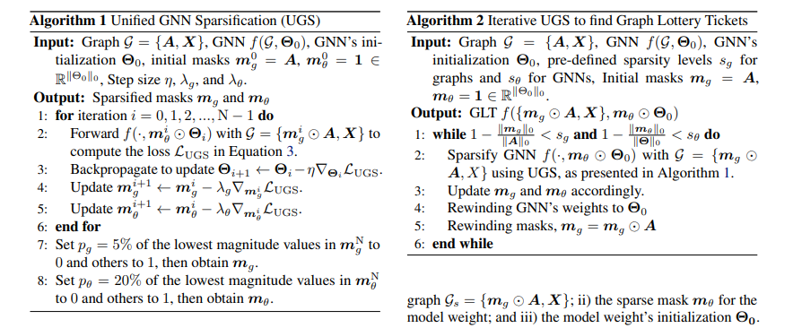</p>
<h5 id="复杂度分析"><a href="#复杂度分析" class="headerlink" title="复杂度分析"></a>复杂度分析</h5><p>GLT 的推理时间复杂度为$o(\mathcal{L}\times\left|\boldsymbol{m}_g\odot\boldsymbol{A}\right|_0\times\mathcal{F}+\mathcal{L}\times\left|\boldsymbol{m}_\theta\right|_0\times\left|\mathcal{V}\right|\times\mathcal{F}^2)$,其中 L 是层数，$\left|\boldsymbol{m}_g\odot\boldsymbol{A}\right|_0$是稀疏图中剩余边的数量，F是节点特征的维度，$\left|\mathcal{V}\right|$是节点的数量。内存复杂度为$o(\mathcal{L}\times\left|\mathcal{V}\right|\times\mathcal{F}+\mathcal{L}\times\left|m_\theta\right|_0\times\mathcal{F}^2)$。在我们的实现中，剪枝的边将从$\varepsilon$ （边集合）中删除，并且不会参与下一轮的计算。</p>
<h4 id="代码"><a href="#代码" class="headerlink" title="代码"></a><strong>代码</strong></h4><p>我们来直接看<a target="_blank" rel="noopener" href="https://github.com/VITA-Group/Unified-LTH-GNN/blob/main/NodeClassification/main_pruning_imp.py">代码</a>：</p>
<h5 id="主函数"><a href="#主函数" class="headerlink" title="主函数"></a>主函数</h5><p>主函数中：</p>
<figure class="highlight python"><table><tr><td class="gutter"><pre><span class="line">1</span><br><span class="line">2</span><br><span class="line">3</span><br><span class="line">4</span><br><span class="line">5</span><br><span class="line">6</span><br><span class="line">7</span><br><span class="line">8</span><br><span class="line">9</span><br><span class="line">10</span><br></pre></td><td class="code"><pre><span class="line"><span class="keyword">if</span> __name__ == <span class="string">&quot;__main__&quot;</span>:</span><br><span class="line">	<span class="comment">####...........</span></span><br><span class="line">    rewind_weight = <span class="literal">None</span></span><br><span class="line">    <span class="keyword">for</span> p <span class="keyword">in</span> <span class="built_in">range</span>(<span class="number">20</span>):</span><br><span class="line">        final_mask_dict, rewind_weight = run_get_mask(args, seed, p, rewind_weight)</span><br><span class="line">        <span class="comment">###</span></span><br><span class="line">        <span class="comment">###从final_mask_dict中保存mask到rewind_weight，剪枝但保持其他权重和初始化一样</span></span><br><span class="line">        <span class="comment">###</span></span><br><span class="line">        best_acc_val, final_acc_test, final_epoch_list, adj_spar, wei_spar = run_fix_mask(args, seed, rewind_weight)</span><br><span class="line">        <span class="comment">###省略所有的print</span></span><br></pre></td></tr></table></figure>

<p>每一个epochs中包括了run_get_mask和run_fix_mask，前者是获得mask，后者是保持mask，对模型继续训练。</p>
<h5 id="run-get-mask函数"><a href="#run-get-mask函数" class="headerlink" title="run_get_mask函数"></a><strong>run_get_mask函数</strong></h5><p>模型代码：</p>
<figure class="highlight python"><table><tr><td class="gutter"><pre><span class="line">1</span><br><span class="line">2</span><br><span class="line">3</span><br><span class="line">4</span><br><span class="line">5</span><br><span class="line">6</span><br><span class="line">7</span><br><span class="line">8</span><br><span class="line">9</span><br><span class="line">10</span><br><span class="line">11</span><br><span class="line">12</span><br><span class="line">13</span><br><span class="line">14</span><br><span class="line">15</span><br><span class="line">16</span><br><span class="line">17</span><br><span class="line">18</span><br><span class="line">19</span><br><span class="line">20</span><br><span class="line">21</span><br><span class="line">22</span><br><span class="line">23</span><br><span class="line">24</span><br><span class="line">25</span><br><span class="line">26</span><br><span class="line">27</span><br><span class="line">28</span><br></pre></td><td class="code"><pre><span class="line"><span class="class"><span class="keyword">class</span> <span class="title">net_gcn</span>(<span class="params">nn.Module</span>):</span></span><br><span class="line">    <span class="function"><span class="keyword">def</span> <span class="title">__init__</span>(<span class="params">self, embedding_dim, adj</span>):</span></span><br><span class="line">        self.adj_mask1_train = nn.Parameter(self.generate_adj_mask(adj))</span><br><span class="line">		<span class="comment">###省略</span></span><br><span class="line">        </span><br><span class="line">    <span class="function"><span class="keyword">def</span> <span class="title">forward</span>(<span class="params">self, x, adj, val_test=<span class="literal">False</span></span>):</span></span><br><span class="line">        adj = torch.mul(adj, self.adj_mask1_train)<span class="comment">#点乘mask</span></span><br><span class="line">        adj = torch.mul(adj, self.adj_mask2_fixed)<span class="comment">#点乘mask</span></span><br><span class="line">        adj = self.normalize(adj)</span><br><span class="line">        <span class="keyword">for</span> ln <span class="keyword">in</span> <span class="built_in">range</span>(self.layer_num):</span><br><span class="line">            x = torch.mm(adj, x)</span><br><span class="line">            x = self.net_layer[ln](x)</span><br><span class="line">            <span class="keyword">if</span> ln == self.layer_num - <span class="number">1</span>:</span><br><span class="line">                <span class="keyword">break</span></span><br><span class="line">            x = self.relu(x)</span><br><span class="line">            <span class="keyword">if</span> val_test:</span><br><span class="line">                <span class="keyword">continue</span></span><br><span class="line">            x = self.dropout(x)</span><br><span class="line">        <span class="keyword">return</span> x</span><br><span class="line">    <span class="comment">###省略</span></span><br><span class="line">    <span class="function"><span class="keyword">def</span> <span class="title">generate_adj_mask</span>(<span class="params">self, input_adj</span>):</span></span><br><span class="line">        </span><br><span class="line">        sparse_adj = input_adj</span><br><span class="line">        zeros = torch.zeros_like(sparse_adj)</span><br><span class="line">        ones = torch.ones_like(sparse_adj)</span><br><span class="line">        mask = torch.where(sparse_adj != <span class="number">0</span>, ones, zeros)</span><br><span class="line">        <span class="keyword">return</span> mask</span><br><span class="line">    <span class="comment">###省略</span></span><br></pre></td></tr></table></figure>

<p>训练部分：</p>
<figure class="highlight python"><table><tr><td class="gutter"><pre><span class="line">1</span><br><span class="line">2</span><br><span class="line">3</span><br><span class="line">4</span><br><span class="line">5</span><br><span class="line">6</span><br><span class="line">7</span><br><span class="line">8</span><br><span class="line">9</span><br><span class="line">10</span><br><span class="line">11</span><br><span class="line">12</span><br><span class="line">13</span><br><span class="line">14</span><br><span class="line">15</span><br><span class="line">16</span><br></pre></td><td class="code"><pre><span class="line"><span class="comment">####....</span></span><br><span class="line">loss_func = nn.CrossEntropyLoss()</span><br><span class="line">net_gcn = net.net_gcn(embedding_dim=args[<span class="string">&#x27;embedding_dim&#x27;</span>], adj=adj)</span><br><span class="line">pruning.add_mask(net_gcn)<span class="comment">#给边加mask</span></span><br><span class="line"><span class="comment">####....</span></span><br><span class="line"><span class="keyword">if</span> rewind_weight_mask:</span><br><span class="line">        net_gcn.load_state_dict(rewind_weight_mask) <span class="comment">#恢复权重</span></span><br><span class="line"><span class="comment">####....</span></span><br><span class="line"><span class="keyword">for</span> epoch <span class="keyword">in</span> <span class="built_in">range</span>(args[<span class="string">&#x27;total_epoch&#x27;</span>]):</span><br><span class="line">        optimizer.zero_grad()</span><br><span class="line">        output = net_gcn(features, adj)</span><br><span class="line">        loss = loss_func(output[idx_train], labels[idx_train])</span><br><span class="line">        loss.backward()</span><br><span class="line">        pruning.subgradient_update_mask(net_gcn, args) <span class="comment"># l1 norm</span></span><br><span class="line">        optimizer.step()</span><br><span class="line">        <span class="comment">####以下为验证部分，忽略</span></span><br></pre></td></tr></table></figure>

<p>我们仔细分析这部分：</p>
<p>对于add_mask函数，对边加mask。</p>
<figure class="highlight python"><table><tr><td class="gutter"><pre><span class="line">1</span><br><span class="line">2</span><br><span class="line">3</span><br><span class="line">4</span><br><span class="line">5</span><br><span class="line">6</span><br><span class="line">7</span><br><span class="line">8</span><br><span class="line">9</span><br><span class="line">10</span><br><span class="line">11</span><br><span class="line">12</span><br><span class="line">13</span><br><span class="line">14</span><br><span class="line">15</span><br><span class="line">16</span><br><span class="line">17</span><br><span class="line">18</span><br><span class="line">19</span><br><span class="line">20</span><br><span class="line">21</span><br><span class="line">22</span><br><span class="line">23</span><br><span class="line">24</span><br><span class="line">25</span><br><span class="line">26</span><br></pre></td><td class="code"><pre><span class="line"><span class="function"><span class="keyword">def</span> <span class="title">add_mask</span>(<span class="params">model, init_mask_dict=<span class="literal">None</span></span>):</span></span><br><span class="line">    <span class="keyword">if</span> init_mask_dict <span class="keyword">is</span> <span class="literal">None</span>: </span><br><span class="line">        mask1_train = nn.Parameter(torch.ones_like(model.net_layer[<span class="number">0</span>].weight))</span><br><span class="line">        mask1_fixed = nn.Parameter(torch.ones_like(model.net_layer[<span class="number">0</span>].weight), requires_grad=<span class="literal">False</span>)</span><br><span class="line">        mask2_train = nn.Parameter(torch.ones_like(model.net_layer[<span class="number">1</span>].weight))</span><br><span class="line">        mask2_fixed = nn.Parameter(torch.ones_like(model.net_layer[<span class="number">1</span>].weight), requires_grad=<span class="literal">False</span>)</span><br><span class="line">    <span class="keyword">else</span>:</span><br><span class="line">        mask1_train = nn.Parameter(init_mask_dict[<span class="string">&#x27;mask1_train&#x27;</span>])</span><br><span class="line">        mask1_fixed = nn.Parameter(init_mask_dict[<span class="string">&#x27;mask1_fixed&#x27;</span>], requires_grad=<span class="literal">False</span>)</span><br><span class="line">        mask2_train = nn.Parameter(init_mask_dict[<span class="string">&#x27;mask2_train&#x27;</span>])</span><br><span class="line">        mask2_fixed = nn.Parameter(init_mask_dict[<span class="string">&#x27;mask2_fixed&#x27;</span>], requires_grad=<span class="literal">False</span>)</span><br><span class="line">    AddTrainableMask.apply(model.net_layer[<span class="number">0</span>], <span class="string">&#x27;weight&#x27;</span>, mask1_train, mask1_fixed)</span><br><span class="line">    AddTrainableMask.apply(model.net_layer[<span class="number">1</span>], <span class="string">&#x27;weight&#x27;</span>, mask2_train, mask2_fixed)</span><br><span class="line">....   </span><br><span class="line"><span class="comment">#AddTrainableMask.apply部分</span></span><br><span class="line"><span class="function"><span class="keyword">def</span> <span class="title">apply</span>(<span class="params">cls, module, name, mask_train, mask_fixed, *args, **kwargs</span>):</span></span><br><span class="line">    method = cls(*args, **kwargs)  </span><br><span class="line">    method._tensor_name = name</span><br><span class="line">    orig = <span class="built_in">getattr</span>(module, name)</span><br><span class="line">    module.register_parameter(name + <span class="string">&quot;_mask_train&quot;</span>, mask_train.to(dtype=orig.dtype))</span><br><span class="line">    module.register_parameter(name + <span class="string">&quot;_mask_fixed&quot;</span>, mask_fixed.to(dtype=orig.dtype))</span><br><span class="line">    module.register_parameter(name + <span class="string">&quot;_orig_weight&quot;</span>, orig)</span><br><span class="line">    <span class="keyword">del</span> module._parameters[name]</span><br><span class="line">    <span class="built_in">setattr</span>(module, name, method.apply_mask(module))</span><br><span class="line">    module.register_forward_pre_hook(method)</span><br><span class="line">    <span class="keyword">return</span> method</span><br></pre></td></tr></table></figure>

<p>对于subgradient_update_mask函数，他是一个 l1 norm</p>
<p>具体而言</p>
<figure class="highlight python"><table><tr><td class="gutter"><pre><span class="line">1</span><br><span class="line">2</span><br><span class="line">3</span><br><span class="line">4</span><br></pre></td><td class="code"><pre><span class="line"><span class="function"><span class="keyword">def</span> <span class="title">subgradient_update_mask</span>(<span class="params">model, args</span>):</span></span><br><span class="line">    model.adj_mask1_train.grad.data.add_(args[<span class="string">&#x27;s1&#x27;</span>] * torch.sign(model.adj_mask1_train.data))</span><br><span class="line">    model.net_layer[<span class="number">0</span>].weight_mask_train.grad.data.add_(args[<span class="string">&#x27;s2&#x27;</span>] * torch.sign(model.net_layer[<span class="number">0</span>].weight_mask_train.data))</span><br><span class="line">    model.net_layer[<span class="number">1</span>].weight_mask_train.grad.data.add_(args[<span class="string">&#x27;s2&#x27;</span>] * torch.sign(model.net_layer[<span class="number">1</span>].weight_mask_train.data))</span><br></pre></td></tr></table></figure>

<p>简单来说，我们知道，$\frac{d}{dx}\abs{x}=sgn(x)$，这里相当于做了一个梯度下降。</p>
<p>其余的就是传统的三件套</p>
<figure class="highlight python"><table><tr><td class="gutter"><pre><span class="line">1</span><br><span class="line">2</span><br><span class="line">3</span><br></pre></td><td class="code"><pre><span class="line">optimizer.zero_grad()</span><br><span class="line">loss.backward()</span><br><span class="line">optimizer.step()</span><br></pre></td></tr></table></figure>

<h5 id="run-fix-mask函数"><a href="#run-fix-mask函数" class="headerlink" title="run_fix_mask函数"></a><strong>run_fix_mask函数</strong></h5><figure class="highlight python"><table><tr><td class="gutter"><pre><span class="line">1</span><br><span class="line">2</span><br><span class="line">3</span><br><span class="line">4</span><br><span class="line">5</span><br><span class="line">6</span><br><span class="line">7</span><br><span class="line">8</span><br><span class="line">9</span><br><span class="line">10</span><br><span class="line">11</span><br><span class="line">12</span><br><span class="line">13</span><br><span class="line">14</span><br><span class="line">15</span><br><span class="line">16</span><br><span class="line">17</span><br><span class="line">18</span><br><span class="line">19</span><br><span class="line">20</span><br><span class="line">21</span><br><span class="line">22</span><br></pre></td><td class="code"><pre><span class="line">loss_func = nn.CrossEntropyLoss()</span><br><span class="line">net_gcn = net.net_gcn(embedding_dim=args[<span class="string">&#x27;embedding_dim&#x27;</span>], adj=adj)</span><br><span class="line">pruning.add_mask(net_gcn)</span><br><span class="line">net_gcn = net_gcn.cuda()</span><br><span class="line">net_gcn.load_state_dict(rewind_weight_mask)</span><br><span class="line">adj_spar, wei_spar = pruning.print_sparsity(net_gcn)</span><br><span class="line"><span class="comment">#多了这部分，将所有的mask都移出训练</span></span><br><span class="line"><span class="keyword">for</span> name, param <span class="keyword">in</span> net_gcn.named_parameters():</span><br><span class="line">    <span class="keyword">if</span> <span class="string">&#x27;mask&#x27;</span> <span class="keyword">in</span> name:</span><br><span class="line">        param.requires_grad = <span class="literal">False</span></span><br><span class="line">optimizer = torch.optim.Adam(net_gcn.parameters(), lr=args[<span class="string">&#x27;lr&#x27;</span>], weight_decay=args[<span class="string">&#x27;weight_decay&#x27;</span>])</span><br><span class="line">acc_test = <span class="number">0.0</span></span><br><span class="line">best_val_acc = &#123;<span class="string">&#x27;val_acc&#x27;</span>: <span class="number">0</span>, <span class="string">&#x27;epoch&#x27;</span> : <span class="number">0</span>, <span class="string">&#x27;test_acc&#x27;</span>: <span class="number">0</span>&#125;</span><br><span class="line"></span><br><span class="line"><span class="keyword">for</span> epoch <span class="keyword">in</span> <span class="built_in">range</span>(<span class="number">200</span>):<span class="comment">#不能指定epochs</span></span><br><span class="line">    optimizer.zero_grad()</span><br><span class="line">    output = net_gcn(features, adj)</span><br><span class="line">    loss = loss_func(output[idx_train], labels[idx_train])</span><br><span class="line">    loss.backward()</span><br><span class="line">    <span class="comment">#此处少了pruning.subgradient_update_mask(net_gcn, args) # l1 normsubgradient_update_mask</span></span><br><span class="line">    optimizer.step()</span><br><span class="line">    <span class="comment">####以下为验证部分，忽略</span></span><br></pre></td></tr></table></figure>

<p>基本和run_get_mask一样，不同在于，将mask移出训练，也少了l1，和限定epochs。</p>
<h4 id="实验"><a href="#实验" class="headerlink" title="实验"></a>实验</h4><p>pass</p>
<h2 id="《searching-lottery-tickets-in-graph-neural-networks-a-dual-perspective-2023ICLR-pdf-gt"><a href="#《searching-lottery-tickets-in-graph-neural-networks-a-dual-perspective-2023ICLR-pdf-gt" class="headerlink" title="《searching lottery tickets in graph neural networks a dual perspective(2023ICLR).pdf&gt;"></a>《searching lottery tickets in graph neural networks a dual perspective(2023ICLR).pdf&gt;</h2><p>代码：<a target="_blank" rel="noopener" href="https://github.com/Lyccl/RGLT">https://github.com/Lyccl/RGLT</a></p>
<h3 id="相关研究"><a href="#相关研究" class="headerlink" title="相关研究"></a>相关研究</h3><p>探索了其对偶问题并提出对偶彩票假说 DLTH：给定随机初始化的网络，其随机挑选的子网络可以被转换成彩票子网络，并得到与 LTH 找到的彩票子网络相当甚至更好的准确率。</p>
<p>算法</p>
<p>DiffPool+mask+GIR（Gradually Increased Regularization）</p>
<p>它的mask矩阵只作用在领接矩阵上。</p>
<p>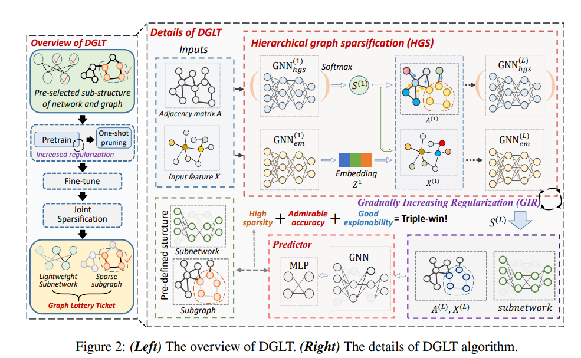</p>
<p>整体算法逻辑为：</p>
<p>1.DiffPool模型训练+GIR</p>
<p>2.one_shot_prune</p>
<p>3.run_fine_tune</p>
<figure class="highlight python"><table><tr><td class="gutter"><pre><span class="line">1</span><br><span class="line">2</span><br><span class="line">3</span><br><span class="line">4</span><br><span class="line">5</span><br><span class="line">6</span><br><span class="line">7</span><br><span class="line">8</span><br><span class="line">9</span><br><span class="line">10</span><br><span class="line">11</span><br><span class="line">12</span><br><span class="line">13</span><br><span class="line">14</span><br><span class="line">15</span><br><span class="line">16</span><br><span class="line">17</span><br><span class="line">18</span><br><span class="line">19</span><br><span class="line">20</span><br><span class="line">21</span><br><span class="line">22</span><br><span class="line">23</span><br><span class="line">24</span><br><span class="line">25</span><br><span class="line">26</span><br><span class="line">27</span><br><span class="line">28</span><br><span class="line">29</span><br><span class="line">30</span><br></pre></td><td class="code"><pre><span class="line">model = DiffPool(input_dim,</span><br><span class="line">                     hidden_dim,</span><br><span class="line">                     embedding_dim,</span><br><span class="line">                     label_dim,</span><br><span class="line">                     activation,</span><br><span class="line">                     prog_args.gc_per_block,</span><br><span class="line">                     prog_args.dropout,</span><br><span class="line">                     prog_args.num_pool,</span><br><span class="line">                     prog_args.linkpred,</span><br><span class="line">                     prog_args.batch_size,</span><br><span class="line">                     <span class="string">&#x27;meanpool&#x27;</span>,</span><br><span class="line">                     assign_dim,</span><br><span class="line">                     prog_args.pool_ratio)</span><br><span class="line"><span class="comment">###省略</span></span><br><span class="line">weight_decays = get_weight_decays(count)</span><br><span class="line">masks, unmasks = getMasks(model, w_ratio)<span class="comment">#随机获取mask?</span></span><br><span class="line">logger = train(</span><br><span class="line">    mask,</span><br><span class="line">    train_dataloader,</span><br><span class="line">    model,</span><br><span class="line">    optimizer,</span><br><span class="line">    prog_args,</span><br><span class="line">    weight_decays,</span><br><span class="line">    count,</span><br><span class="line">    masks,</span><br><span class="line">    val_dataset=val_dataloader)</span><br><span class="line"><span class="comment">#省略评估</span></span><br><span class="line">one_shot_prune(model, unmasks)</span><br><span class="line">new_logger = run_fine_tune(mask, model, optimizer, count, prog_args, train_dataloader, weight_decays, masks, unmasks,</span><br><span class="line">                           logger)</span><br></pre></td></tr></table></figure>

<h3 id="DiffPool"><a href="#DiffPool" class="headerlink" title="DiffPool"></a>DiffPool</h3><p>这部分该论文的代码和dgl库的Diffpool完全一样，该论文加了个mask。</p>
<p>例如下图所示，多了红框处的代码。</p>
<p>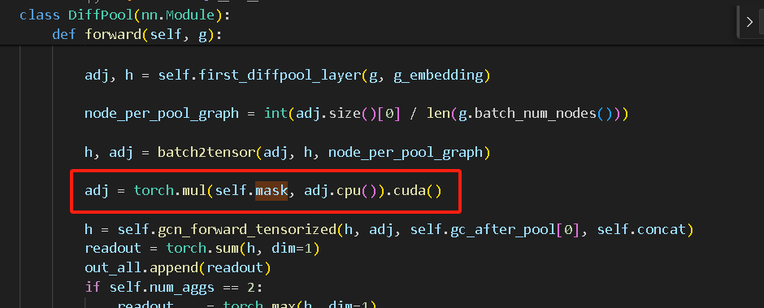</p>
<p>该论文出自NeurIPS 2018，它是一种可微图池化模块，可以生成图的层次表示，并可以以端到端的方式与各种图神经网络架构相结合。</p>
<p>模型框架：</p>
<p>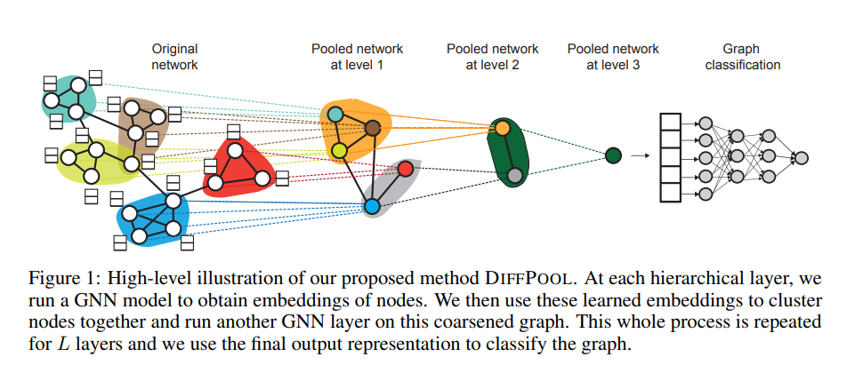</p>
<p>DIFFPOOL 可以表达为 :</p>
<p>$\text{}\left(A^{(l+1)},X^{(l+1)}\right)=\mathrm{DiFF~POOL}\left(A^{(l)},Z^{(l)}\right)$</p>
<p>即<br>$$<br>\begin{aligned}&amp;X^{(l+1)}=S^{(l)^{T}}Z^{(l)}\in\mathbb{R}^{n_{l+1}\times d}\quad(3)\&amp;A^{(l+1)}=S^{(l)^{T}}A^{(l)}S^{(l)}\in\mathbb{R}^{n_{l+1}\times n_{l+1}}\quad(4)\end{aligned}<br>$$<br>Z称为嵌入矩阵，S称为分配矩阵。</p>
<p>并设计了两套GNN，来获得嵌入矩阵和分配矩阵。<br>$$Z^{(l)}=\mathrm{GNN}_{l,\mathrm{~embed}}\left(A^{(l)},X^{(l)}\right)$$</p>
<p>$$S^{(l)}=\mathrm{softmax}\big(\mathrm{GNN}_{l,\mathrm{pool}}\big(A^{(l)},X^{(l)}\big)\big)$$<br>Note: 最后一层设置聚类分配矩阵设置输出大小为 1。</p>
<p>作者说，4很难通过梯度进行训练，所以本文采用 最小化Frobenius norm<br>$$L_{\mathrm{LP}}=\left|A^{(l)},S^{(l)}S^{(l)^{T}}\right|_{F}$$</p>
<blockquote>
<p>这里写的不明白，应该是$$L_{\mathrm{LP}}=\left|A^{(l)}-S^{(l)}S^{(l)^{T}}\right|_{F}$$</p>
</blockquote>
<p>每个聚类分配矩阵 被希望接近于一个 one-hot 向量，以便明确每个簇的隶属关系，所以本文通过最小化簇分配的熵：<br>$$\bar{L}<em>{\mathrm{E}}=\frac{1}{n}\sum</em>{i=1}^{n}H\left(S_{i}\right)$$<br>其中：</p>
<p>$\circ H$为熵函数$H(X)=-\sum_x\in\tau p(x)\log(x);$<br>o $S_i$为 $S$的第$i$行；</p>
<blockquote>
<p>然而，据作者<a target="_blank" rel="noopener" href="https://github.com/RexYing/diffpool/issues/24">所说</a>，原因是由于分配预测包含 [0,1] 之间的值，因此交叉熵比 Frobenius 范数中的 l2 更有效。<a target="_blank" rel="noopener" href="https://github.com/RexYing/diffpool">官方的代码</a>是使用了交叉熵来代替 Frobenius 范数。</p>
<p>具体而言：</p>
<figure class="highlight python"><table><tr><td class="gutter"><pre><span class="line">1</span><br></pre></td><td class="code"><pre><span class="line">self.link_loss = -adj * torch.log(pred_adj+eps) - (<span class="number">1</span>-adj) * torch.log(<span class="number">1</span>-pred_adj+eps)</span><br></pre></td></tr></table></figure>
</blockquote>
<p><strong>模型训练部分：</strong></p>
<p>也是常规的backward三件套，直接来看loss。</p>
<blockquote>
<p>loss = model.loss(ypred, graph_labels)<br>reg_loss = Regularization(model, weight_decays[int(count / 10)], masks, p=2)<br>pool_loss = cau_loss(mask, model, weight_decays[int(count / 10)])<br>my_reg = reg_loss(model)<br>loss = loss + my_reg + pool_loss</p>
</blockquote>
<p>即对应论文的</p>
<p>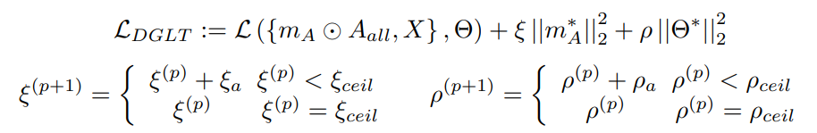</p>
<p>由于正则项的系数会发生递增变化，也就是Gradually Increased Regularization。</p>
<p>我们仔细看下去</p>
<p>对于cau_loss，他是对mask进行正则项的计算，对应上式的第2部分：</p>
<figure class="highlight python"><table><tr><td class="gutter"><pre><span class="line">1</span><br><span class="line">2</span><br><span class="line">3</span><br><span class="line">4</span><br><span class="line">5</span><br><span class="line">6</span><br><span class="line">7</span><br><span class="line">8</span><br><span class="line">9</span><br><span class="line">10</span><br></pre></td><td class="code"><pre><span class="line"><span class="function"><span class="keyword">def</span> <span class="title">cau_loss</span>(<span class="params">mask, model, weight_decay</span>):</span></span><br><span class="line">    reg_loss = <span class="number">0</span></span><br><span class="line">    <span class="keyword">for</span> name, w <span class="keyword">in</span> model.named_parameters():</span><br><span class="line">        <span class="keyword">if</span> <span class="string">&#x27;mask&#x27;</span> <span class="keyword">in</span> name:<span class="comment">##对mask进行正则项的计算</span></span><br><span class="line">            temp = np.array(Tensor.cpu(w.data) * Tensor.cpu(mask))</span><br><span class="line">            new_data = torch.from_numpy(temp).cuda()</span><br><span class="line">            l2_reg = torch.norm(new_data, p=<span class="number">2</span>)</span><br><span class="line">            reg_loss = reg_loss + l2_reg</span><br><span class="line">    reg_loss = weight_decay * reg_loss</span><br><span class="line">    <span class="keyword">return</span> reg_loss</span><br></pre></td></tr></table></figure>

<p>对于reg_loss，他是对模型参数进行正则项的计算，对应上式的第3部分：</p>
<figure class="highlight python"><table><tr><td class="gutter"><pre><span class="line">1</span><br><span class="line">2</span><br><span class="line">3</span><br><span class="line">4</span><br><span class="line">5</span><br><span class="line">6</span><br><span class="line">7</span><br><span class="line">8</span><br><span class="line">9</span><br><span class="line">10</span><br></pre></td><td class="code"><pre><span class="line">····</span><br><span class="line"><span class="keyword">for</span> name, param <span class="keyword">in</span> model.named_parameters():</span><br><span class="line">    <span class="keyword">if</span> <span class="string">&#x27;weight&#x27;</span> <span class="keyword">in</span> name:<span class="comment">#对模型参数进行正则项的计算</span></span><br><span class="line">        <span class="keyword">if</span> <span class="string">&#x27;norms&#x27;</span> <span class="keyword">in</span> name:</span><br><span class="line">            <span class="keyword">continue</span></span><br><span class="line">        <span class="keyword">if</span> <span class="string">&#x27;bn&#x27;</span> <span class="keyword">in</span> name:</span><br><span class="line">            <span class="keyword">continue</span></span><br><span class="line">        weight = (name, param)</span><br><span class="line">        weight_list.append(weight)</span><br><span class="line">····</span><br></pre></td></tr></table></figure>

<p>注意：mask和masks</p>
<h3 id="one-shot-prune"><a href="#one-shot-prune" class="headerlink" title="one_shot_prune"></a>one_shot_prune</h3><figure class="highlight py"><table><tr><td class="gutter"><pre><span class="line">1</span><br><span class="line">2</span><br><span class="line">3</span><br><span class="line">4</span><br><span class="line">5</span><br><span class="line">6</span><br><span class="line">7</span><br><span class="line">8</span><br><span class="line">9</span><br><span class="line">10</span><br><span class="line">11</span><br><span class="line">12</span><br><span class="line">13</span><br><span class="line">14</span><br><span class="line">15</span><br><span class="line">16</span><br><span class="line">17</span><br><span class="line">18</span><br><span class="line">19</span><br><span class="line">20</span><br><span class="line">21</span><br><span class="line">22</span><br><span class="line">23</span><br><span class="line">24</span><br><span class="line">25</span><br><span class="line">26</span><br><span class="line">27</span><br><span class="line">28</span><br><span class="line">29</span><br><span class="line">30</span><br><span class="line">31</span><br><span class="line">32</span><br><span class="line">33</span><br><span class="line">34</span><br><span class="line">35</span><br><span class="line">36</span><br><span class="line">37</span><br><span class="line">38</span><br></pre></td><td class="code"><pre><span class="line"><span class="function"><span class="keyword">def</span> <span class="title">getMasks</span>(<span class="params">model, w_ratio</span>):</span></span><br><span class="line">    <span class="comment"># w_ratio代表剩余网络参数的比例</span></span><br><span class="line">    unmasks = []</span><br><span class="line">    masks = []</span><br><span class="line">    <span class="keyword">for</span> name, param <span class="keyword">in</span> model.named_parameters():</span><br><span class="line">        <span class="keyword">if</span> <span class="string">&#x27;weight&#x27;</span> <span class="keyword">in</span> name:</span><br><span class="line">            <span class="keyword">if</span> <span class="string">&#x27;norms&#x27;</span> <span class="keyword">in</span> name:</span><br><span class="line">                <span class="keyword">continue</span></span><br><span class="line">            <span class="keyword">if</span> <span class="string">&#x27;bn&#x27;</span> <span class="keyword">in</span> name:</span><br><span class="line">                <span class="keyword">continue</span></span><br><span class="line">            <span class="built_in">print</span>(name)</span><br><span class="line">            mask = torch.zeros_like(param)</span><br><span class="line">            unmask = torch.ones_like(param)</span><br><span class="line">            shape0 = mask.shape[<span class="number">0</span>]</span><br><span class="line">            shape1 = mask.shape[<span class="number">1</span>]</span><br><span class="line">            mask = mask.reshape(-<span class="number">1</span>)</span><br><span class="line">            indices = np.random.choice(np.arange(torch.tensor(mask.shape).item()), replace=<span class="literal">False</span>,</span><br><span class="line">                                       size=<span class="built_in">int</span>(torch.tensor(mask.shape).item() * (<span class="number">1</span> - w_ratio)))<span class="comment">#随机抽取</span></span><br><span class="line">            mask[indices] = <span class="number">1</span></span><br><span class="line">            mask = mask.reshape(shape0, shape1)</span><br><span class="line">            unmask = unmask - mask</span><br><span class="line">            masks.append(mask)</span><br><span class="line">            unmasks.append(unmask)</span><br><span class="line">    <span class="keyword">return</span> masks, unmasks</span><br><span class="line"><span class="comment">###省略</span></span><br><span class="line">masks, unmasks = getMasks(model, w_ratio)</span><br><span class="line"><span class="comment">###省略</span></span><br><span class="line"><span class="function"><span class="keyword">def</span> <span class="title">one_shot_prune</span>(<span class="params">model, unmasks</span>):</span></span><br><span class="line">    my_count = <span class="number">0</span></span><br><span class="line">    <span class="keyword">for</span> name, param <span class="keyword">in</span> model.named_parameters():</span><br><span class="line">        <span class="keyword">with</span> torch.no_grad():</span><br><span class="line">            <span class="keyword">if</span> <span class="string">&#x27;weight&#x27;</span> <span class="keyword">in</span> name:</span><br><span class="line">                <span class="keyword">if</span> <span class="string">&#x27;norms&#x27;</span> <span class="keyword">in</span> name:</span><br><span class="line">                    <span class="keyword">continue</span></span><br><span class="line">                <span class="keyword">if</span> <span class="string">&#x27;bn&#x27;</span> <span class="keyword">in</span> name:</span><br><span class="line">                    <span class="keyword">continue</span></span><br><span class="line">                param[:] = param * unmasks[my_count]</span><br><span class="line">                my_count += <span class="number">1</span></span><br></pre></td></tr></table></figure>

<p>进行<strong>随机</strong>剪枝操作,和UGS等不同。</p>
<h3 id="run-fine-tune"><a href="#run-fine-tune" class="headerlink" title="run_fine_tune"></a>run_fine_tune</h3><p>和train函数是一样的，多了每一epoch后执行类似于one shot_prune的操作</p>
<figure class="highlight python"><table><tr><td class="gutter"><pre><span class="line">1</span><br><span class="line">2</span><br><span class="line">3</span><br><span class="line">4</span><br><span class="line">5</span><br><span class="line">6</span><br><span class="line">7</span><br><span class="line">8</span><br><span class="line">9</span><br><span class="line">10</span><br><span class="line">11</span><br><span class="line">12</span><br><span class="line">13</span><br><span class="line">14</span><br></pre></td><td class="code"><pre><span class="line"><span class="keyword">for</span> epoch <span class="keyword">in</span> <span class="built_in">range</span>(<span class="number">1000</span>):</span><br><span class="line">    <span class="comment">###省略省略</span></span><br><span class="line">    训练</span><br><span class="line">    <span class="comment">###省略省略</span></span><br><span class="line">    count = <span class="number">0</span></span><br><span class="line">	<span class="keyword">for</span> name, param <span class="keyword">in</span> model.named_parameters():</span><br><span class="line">    	<span class="keyword">with</span> torch.no_grad():</span><br><span class="line">        <span class="keyword">if</span> <span class="string">&#x27;weight&#x27;</span> <span class="keyword">in</span> name:</span><br><span class="line">            <span class="keyword">if</span> <span class="string">&#x27;norms&#x27;</span> <span class="keyword">in</span> name:</span><br><span class="line">                <span class="keyword">continue</span></span><br><span class="line">            <span class="keyword">if</span> <span class="string">&#x27;bn&#x27;</span> <span class="keyword">in</span> name:</span><br><span class="line">                <span class="keyword">continue</span></span><br><span class="line">            param[:] = param * unmasks[count]</span><br><span class="line">            count += <span class="number">1</span>						</span><br></pre></td></tr></table></figure>

<h3 id="理论部分"><a href="#理论部分" class="headerlink" title="理论部分"></a>理论部分</h3><h4 id="时间复杂度计算"><a href="#时间复杂度计算" class="headerlink" title="时间复杂度计算"></a>时间复杂度计算</h4><p>GLT是$o(\mathcal{L}\times\left|\boldsymbol{m}_g\odot\boldsymbol{A}\right|_0\times\mathcal{F}+\mathcal{L}\times\left|\boldsymbol{m}_\theta\right|_0\times\left|\mathcal{V}\right|\times\mathcal{F}^2)$</p>
<p>而DGLT是$\mathcal{O}\left(\left|\left|m_{A}\odot A_{all}\right|\right|<em>{0}\times F+\left|\left|m^{*}\right|\right|</em>{0}\times\left|\mathcal{V}\right|\times F^{2}\right)+\mathcal{O}\left(\mathcal{K}\right)$,其中 $m_{A}=\left{m_{A}^{0},:\hat{m}<em>{A}^{1}\ldots m</em>{A}^{L}\right}$ 所有领接矩阵的mask。$\mathcal{O}(K)$ 为学习节点嵌入和分配矩阵的推理时间复杂度。它们由多个矩阵相乘得到，推理时间复杂度为$\mathcal{O}\left(\mathcal{K}\right)=\mathcal{O}\left(L\times|\mathcal{V}|^{3}+L\times|\mathcal{V}|\times F\right).$</p>
<h3 id="实验-1"><a href="#实验-1" class="headerlink" title="实验"></a>实验</h3><p>pass</p>
<h3 id="另外"><a href="#另外" class="headerlink" title="另外"></a>另外</h3><p><a target="_blank" rel="noopener" href="https://openreview.net/forum?id=Dvs-a3aymPe">https://openreview.net/forum?id=Dvs-a3aymPe</a></p>
<p>DGLT 声称可以将随机预定义的图转换为具有高信息量形式的适当条件。如果这个猜想是正确的，那么它具有相当有希望的实际意义——它表明训练 GNN 模型的消息传递功能（即信息聚合）实际上是不必要的，因为只需要选择邻接矩阵的目标大小或目标GNN的子结构，然后使用层次图稀疏（HGS）算法或逐渐增加正则化进行信息挤出。</p>
<h2 id="《Brave-the-Wind-and-the-Waves-Discovering-Robust-and-Generalizable-Graph-Lottery-Tickets-2023PAMI-pdf》"><a href="#《Brave-the-Wind-and-the-Waves-Discovering-Robust-and-Generalizable-Graph-Lottery-Tickets-2023PAMI-pdf》" class="headerlink" title="《Brave_the_Wind_and_the_Waves_Discovering_Robust_and_Generalizable_Graph_Lottery_Tickets(2023PAMI).pdf》"></a>《Brave_the_Wind_and_the_Waves_Discovering_Robust_and_Generalizable_Graph_Lottery_Tickets(2023PAMI).pdf》</h2><h3 id="简介"><a href="#简介" class="headerlink" title="简介"></a>简介</h3><p>在现实场景中，未见过的测试数据的分布通常是多种多样的。我们将分布外（OOD）数据的失败归因于无法辨别因果模式，而因果模式在分布变化中仍然保持稳定。在传统的空间图学习中，当图/网络稀疏度超过一定的高水平时，模型性能会急剧恶化。更糟糕的是，由于手头的训练集有限，修剪后的 GNN 很难推广到看不见的图数据。为了解决这些问题，我们提出了弹性图彩票（RGLT），以在 GNN 中找到更强大和更通用的 GLT。具体来说，我们通过每个剪枝点的瞬时梯度信息重新激活一部分权重/边缘。经过充分的修剪后，我们进行环境干预以推断潜在的测试分布。最后，我们执行最后几轮模型平均值以进一步提高泛化能力。</p>
<p>处理大型图有两个主要研究方向，要么简化图，要么压缩 GNN 模型。第一种，各种图形采样策略或稀疏化方法。在第二个流上所做的努力要少得多，即修剪 GNN  ，因为 GNN 通常比其他学科中的 DNN 参数化程度较低。</p>
<p>GLT仍然有改进空间：</p>
<p><strong>鲁棒性降低：</strong>在 GLT 中，当图（或网络）稀疏度达到一定程度 时，GNN 的性能将急剧下降，例如超过70%。从概念上讲，GLT 通过基于幅度的剪枝来识别“幸运”图彩票，这可以看作是极化剪枝，在后续训练中不为中等幅度的权重或边缘留下一些余地。在高稀疏度下，模型很难探索完整的权重空间，并且由于稀疏度约束 ，模型更新路线被切断。</p>
<p><strong>泛化能力降低：</strong></p>
<p>然而，图上的剪枝可能会降低模型的泛化性，因为 GNN 与深度学习网络（例如卷积神经网络）一样需要大量数据。</p>
<p>此外，《<a target="_blank" rel="noopener" href="https://arxiv.org/abs/2206.08684">Sparse Double Descent: Where Network Pruning Aggravates Overfitting</a>》（ICML2022）揭示了一个相反的现象——网络剪枝有时甚至会在超稀疏和某些中度稀疏现象下恶化泛化性。该文是第一个报告稀疏双下降现象的工作。更具体地说，证明高模型稀疏度可以显着减轻过度拟合，而中等模型稀疏度可能导致更严重的过度拟合。极端的模型稀疏性 ( →100% ) 往往会丢失所有学到的信息。另外，还得到了和 <em>lottery ticket hypothesis</em> 的相反的结论，从原始初始化重新训练稀疏模型可能不会始终获胜。例如，在某些情况下，随机重新初始化的修剪模型可以在很大程度上超越在某些稀疏度下具有原始初始化的模型。</p>
<p>这个意外问题使 GLT 在具有不同样本和实例的实际应用程序中的使用变得复杂。</p>
<h3 id="算法-1"><a href="#算法-1" class="headerlink" title="算法"></a>算法</h3><p>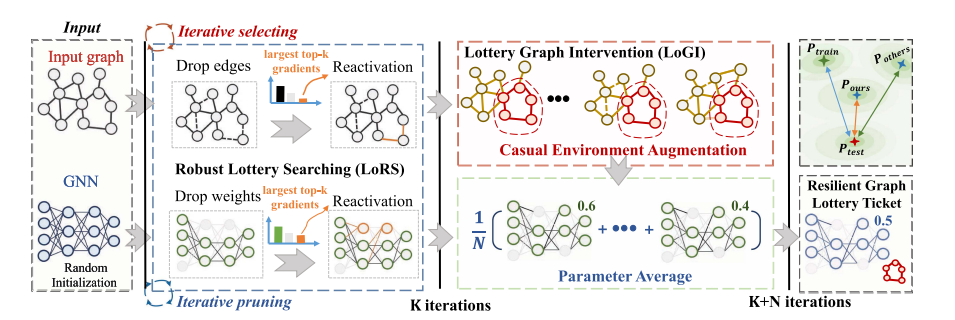</p>
<p>首先，我们执行鲁棒彩票搜索（LoRS）来生成稀疏网络和图的组合。在每次迭代中，我们根据边和权重的大小来修剪边和权重，然后重新激活具有前 k 个梯度的边和权重。然后，我们在核心子图上利用 Lottery Graph Intervention (LoGI) 来推断测试分布，并将增强图传递到剪枝模型以进行下一轮训练。在最后几轮中，我们进行模型平均以进一步提高模型的泛化性。值得注意的是，LoRS 可以独立运行来发现鲁棒图彩票和我们的 LoGI，而 LoGI 算法依赖于 LoRS 识别的核心子图。我们提出的两种算法协同工作，有助于大规模 GNN 应用的落地。</p>
<h4 id="Formulation"><a href="#Formulation" class="headerlink" title="Formulation"></a>Formulation</h4><p>本文意图解决一个更有挑战性的问题，</p>
<p>提高模型的泛化能力。假设 $S\text{ 是环境 }^{1}$的支持（support of the environments，？），$f(·)$ 是预测函数，我们的目标是最小化不同数据分布下的经验风险：<br>$$\min\limits_{f}\max\limits_{e\in\mathcal{S}}\mathbb{E}_{(\mathcal{G},Y)\sim p(\mathcal{G},Y|e)}:[\mathcal{L}\left(f\left(\mathcal{G}\right),Y\right)|e]$$</p>
<blockquote>
<p>我的理解是类似于最小化$L^\infty$距离</p>
</blockquote>
<h4 id="Robust-Lottery-Searching-LoRS"><a href="#Robust-Lottery-Searching-LoRS" class="headerlink" title="Robust Lottery Searching (LoRS)"></a>Robust Lottery Searching (LoRS)</h4><p>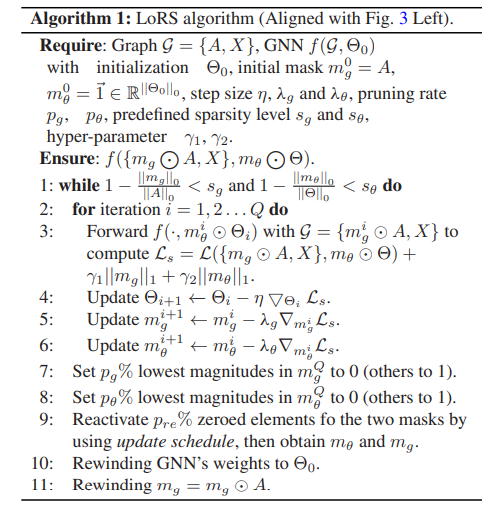</p>
<p>前面的步骤和UGS类似，多了一步，将丢弃的边中梯度最大的若干个恢复，代码如右图红框所示。</p>
<p>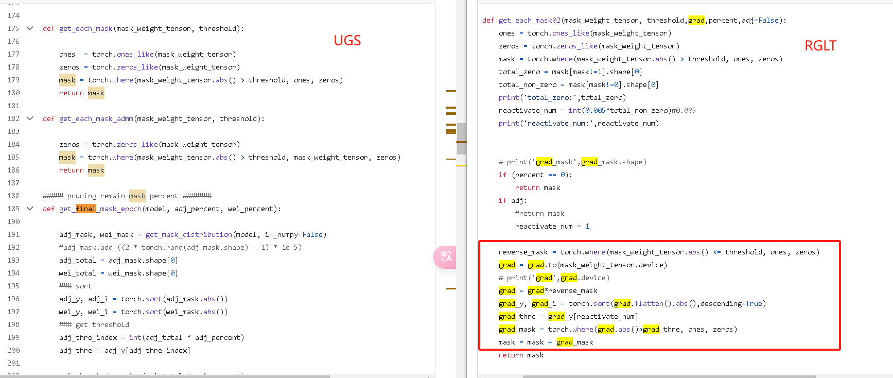</p>
<h4 id="lottery-Graph-Intervention-LoGI"><a href="#lottery-Graph-Intervention-LoGI" class="headerlink" title="lottery Graph Intervention (LoGI)"></a>lottery Graph Intervention (LoGI)</h4><h3 id="代码-1"><a href="#代码-1" class="headerlink" title="代码"></a>代码</h3><p>基于UGS的代码，有大量相同的地方。</p>
<p>和UGS一样，主函数也是包括</p>
<figure class="highlight python"><table><tr><td class="gutter"><pre><span class="line">1</span><br><span class="line">2</span><br><span class="line">3</span><br><span class="line">4</span><br></pre></td><td class="code"><pre><span class="line"><span class="keyword">for</span> .....</span><br><span class="line">	run_get_mask</span><br><span class="line">    XXXX<span class="comment">###从final_mask_dict中保存mask到rewind_weight，剪枝但保持其他权重和初始化一样</span></span><br><span class="line">    run_fix_mask</span><br></pre></td></tr></table></figure>

<h4 id="run-fix-mask"><a href="#run-fix-mask" class="headerlink" title="run_fix_mask"></a>run_fix_mask</h4><figure class="highlight python"><table><tr><td class="gutter"><pre><span class="line">1</span><br><span class="line">2</span><br><span class="line">3</span><br><span class="line">4</span><br><span class="line">5</span><br><span class="line">6</span><br><span class="line">7</span><br><span class="line">8</span><br><span class="line">9</span><br><span class="line">10</span><br><span class="line">11</span><br><span class="line">12</span><br><span class="line">13</span><br><span class="line">14</span><br><span class="line">15</span><br><span class="line">16</span><br><span class="line">17</span><br><span class="line">18</span><br><span class="line">19</span><br><span class="line">20</span><br><span class="line">21</span><br><span class="line">22</span><br><span class="line">23</span><br><span class="line">24</span><br></pre></td><td class="code"><pre><span class="line">optimizer = torch.optim.Adam(net_gcn.parameters(), lr=args[<span class="string">&#x27;lr&#x27;</span>], weight_decay=args[<span class="string">&#x27;weight_decay&#x27;</span>])</span><br><span class="line">optimizer_aug = torch.optim.AdamW(gl.parameters(), lr=args[<span class="string">&#x27;lr_a&#x27;</span>])</span><br><span class="line">l2_loss = torch.nn.MSELoss()</span><br><span class="line"><span class="keyword">for</span> epoch <span class="keyword">in</span> <span class="built_in">range</span>(args[<span class="string">&#x27;epochs&#x27;</span>] ):</span><br><span class="line">    beta = <span class="number">1</span> * args[<span class="string">&quot;beta&quot;</span>] * epoch / args[<span class="string">&#x27;epochs&#x27;</span>] + args[<span class="string">&quot;beta&quot;</span>] * (<span class="number">1</span> - epoch / args[<span class="string">&#x27;epochs&#x27;</span>] )</span><br><span class="line">    <span class="keyword">for</span> m <span class="keyword">in</span> <span class="built_in">range</span>(args[<span class="string">&#x27;T&#x27;</span>]):</span><br><span class="line">        ori_tensor = net_gcn(features, adj, gragh_editor=<span class="literal">True</span>)</span><br><span class="line">        graph_loss = <span class="number">0</span></span><br><span class="line">        <span class="keyword">for</span> k <span class="keyword">in</span> <span class="built_in">range</span>(args[<span class="string">&#x27;K&#x27;</span>]):</span><br><span class="line">            edge_index_k = gl(adj, dataset_tr.graph[<span class="string">&#x27;num_nodes&#x27;</span>], args[<span class="string">&#x27;num_sample&#x27;</span>], k, args[<span class="string">&#x27;rate&#x27;</span>])</span><br><span class="line">            output = net_gcn(features, edge_index_k)</span><br><span class="line">            labels = labels.squeeze(dim=-<span class="number">1</span>)</span><br><span class="line">            loss = loss_func(output, labels)</span><br><span class="line">            optimizer.zero_grad()</span><br><span class="line">            loss.backward()</span><br><span class="line">            optimizer.step()</span><br><span class="line">            </span><br><span class="line">            graph_tensor = net_gcn(features, edge_index_k, gragh_editor=<span class="literal">True</span>)</span><br><span class="line">            graph_loss = graph_loss + l2_loss(ori_tensor, graph_tensor)</span><br><span class="line">        inner_loss = -<span class="number">1.5</span>*graph_loss <span class="comment">#????</span></span><br><span class="line">        <span class="built_in">print</span>(<span class="string">&#x27;inner_loss&#x27;</span>,inner_loss)</span><br><span class="line">        optimizer_aug.zero_grad()</span><br><span class="line">        inner_loss.backward()</span><br><span class="line">        optimizer_aug.step()</span><br></pre></td></tr></table></figure>

<p>不断优化gcn，劣化gl</p>
<h2 id="《Analyzing-Adversarial-Vulnerabilities-of-Graph-Lottery-Tickets-ICASSP2024-pdf》"><a href="#《Analyzing-Adversarial-Vulnerabilities-of-Graph-Lottery-Tickets-ICASSP2024-pdf》" class="headerlink" title="《Analyzing_Adversarial_Vulnerabilities_of_Graph_Lottery_Tickets(ICASSP2024).pdf》"></a>《Analyzing_Adversarial_Vulnerabilities_of_Graph_Lottery_Tickets(ICASSP2024).pdf》</h2><p>和finding_adversarially_robust_graph lottery tickets原作者，内容基本一样。</p>
<p>除了少了平滑项。</p>
<h3 id="实验-2"><a href="#实验-2" class="headerlink" title="实验"></a>实验</h3><p>pass</p>
<h2 id="《finding-adversarially-robust-graph-lottery-tickets-under-review-pdf》"><a href="#《finding-adversarially-robust-graph-lottery-tickets-under-review-pdf》" class="headerlink" title="《finding_adversarially_robust_graph lottery tickets(under review).pdf》"></a>《finding_adversarially_robust_graph lottery tickets(under review).pdf》</h2><p>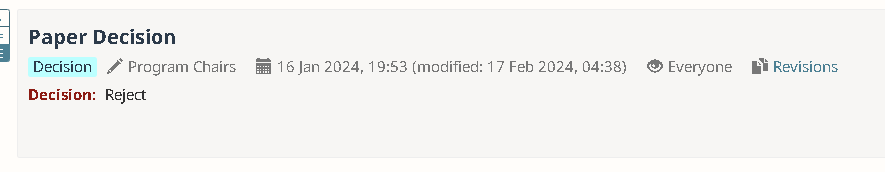被拒了。</p>
<p>AC拒稿理由：</p>
<p>本文提出了一种减少图彩票对图结构的对抗性扰动的脆弱性的技术。结果似乎对这个问题相当有效。审稿人提出了一些担忧，包括设置本身（结构扰动真的是正确的威胁模型吗？关注这一点是否依赖于其他方面不受攻击？）、方法本身的复杂性（超参数太多）以及大小正在研究的图表的数量（它们足够大吗？）。我同意第一个担忧：这真的是一个重要问题吗？如果对图彩票的对抗性攻击是一个重要问题，那么这些类型的攻击在实践中是否重要？我对接受持矛盾态度，并且基于所研究问题的重要性，我倾向于拒绝。对于这个特定问题来说，这似乎是一个合理的贡献，但问题本身却非常小众。</p>
<h3 id="相关工作-1"><a href="#相关工作-1" class="headerlink" title="相关工作"></a>相关工作</h3><p>pass</p>
<h3 id="算法-2"><a href="#算法-2" class="headerlink" title="算法"></a>算法</h3><p>总所周知，两层的GCN可以表示为<br>$$<br>Z=f({ A, X },\Theta)= \mathcal{S}(\hat{A} \sigma ( \hat A X W_{(0)}) W_{(1)})<br>$$<br>设计了一个transductive semi-supervised node classification (SSNC) loss：<br>$$<br>\mathcal{L} _0 (f(\left{A, X\right}, \Theta))=-\sum _ {l \in \mathcal{Y} _{TL}} \sum _{j=1} ^C  Y _{l_j} log( Z <em>{l_j})<br>$$<br>其中$\mathcal{Y}</em>{TL}$是训练节点的索引，C是类总数，$Y_l$是$v_l$one hot 标签。</p>
<p>posion 攻击者的目标是找到一个最优的扰动A ‘，欺骗GNN做出错误的预测。这可以表述为一个双层优化问题(Zugner et al.， 2018;zugner &amp; gunnemann, 2019):<br>$$<br>arg \max\mathcal{L}<em>{atk}(f(\left{A’,X\right},\Theta ^\ast))\<br>A’\in\Phi(A)\<br>\mathrm{s.t.}\quad\Theta^{\ast}=\arg\min</em>{\Theta}\mathcal{L}<em>{0}(f(\left{A’,X\right},\Theta))<br>$$<br>其中$\Phi(A)$是满足$\frac{|A’-A|{0}}{|A|{0}}\leq\Delta$的领接矩阵。$\mathcal{L}</em>{atk}$ 是攻击loss函数，$\Delta$ 是 perturbation rate，$\Theta ^\ast$是摄动图上GNN的最优参数。</p>
<p>为了帮助消除对抗边和鼓励特征平滑，对于homophilic graphs：<br>$$<br>\mathcal{L}<em>{fs} (A’,X)=\frac{1}{2} \sum</em>{i,j=1}A_{ij}’ (x_i-x_j)^2<br>$$<br>对于heterophilic graphs：<br>$$<br>\mathcal{L}<em>{fs}(A’)=\frac{1}{2}\sum</em>{i,j=1}A_{ij}’(y_{i}-y_{j})^{2}<br>$$</p>
<blockquote>
<p>以上有点像<em>dirichlet</em> energy。</p>
<p><em>dirichlet</em> energy：<br>$$<br>tr(x^\top Lx)=|\nabla_Gx|_2^2=\frac{1}{2}\sum _{i,j}W[i,j] (x[j]-x[i])^2<br>$$<br>进一步归一化：<br>$$<br>tr(x^\top Lx)=|\nabla_Gx|_2^2=\frac{1}{2}\sum _{i,j}W[i,j] (\frac{x[j]}{\sqrt{1+d_j}}-\frac{x[i]}{\sqrt{1+d_i}})^2<br>$$<br>（上式来自《<a target="_blank" rel="noopener" href="https://proceedings.neurips.cc/paper/2021/file/b6417f112bd27848533e54885b66c288-Paper.pdf">Dirichlet Energy Constrained Learning for Deep Graph Neural Networks</a>》）</p>
<p>或<br>$$<br>tr(x^\top Lx)=|\nabla_Gx|_2^2=\frac{1}{4}\sum _{i,j}W[i,j]|\frac{x[j]}{\sqrt{d_j}}-\frac{x[i]}{\sqrt{d_i}}|_2^2<br>$$<br>（上式来自《<a target="_blank" rel="noopener" href="https://openreview.net/pdf?id=kS7ED7eE74">A Fractional Graph Laplacian Approach to Oversmoothing</a>》）</p>
<p>其中d为节点的度。</p>
</blockquote>
<p>其中yi∈R P为输入图G上运行DeepWalk算法得到的节点i, j的位置特征，P为节点位置特征个数。</p>
<blockquote>
<p> 查看上面部分的代码，我们可以发现：</p>
 <figure class="highlight python"><table><tr><td class="gutter"><pre><span class="line">1</span><br><span class="line">2</span><br><span class="line">3</span><br><span class="line">4</span><br><span class="line">5</span><br><span class="line">6</span><br><span class="line">7</span><br><span class="line">8</span><br><span class="line">9</span><br><span class="line">10</span><br><span class="line">11</span><br><span class="line">12</span><br><span class="line">13</span><br><span class="line">14</span><br><span class="line">15</span><br><span class="line">16</span><br></pre></td><td class="code"><pre><span class="line"><span class="function"><span class="keyword">def</span> <span class="title">feature_smoothing</span>(<span class="params">self, adj, X</span>):</span></span><br><span class="line"> adj = (adj.t() + adj)/<span class="number">2</span></span><br><span class="line"> rowsum = adj.<span class="built_in">sum</span>(<span class="number">1</span>)</span><br><span class="line"> r_inv = rowsum.flatten()</span><br><span class="line"> D = torch.diag(r_inv)</span><br><span class="line"> L = D - adj</span><br><span class="line"></span><br><span class="line"> r_inv = r_inv  + <span class="number">1e-3</span></span><br><span class="line"> r_inv = r_inv.<span class="built_in">pow</span>(-<span class="number">1</span>/<span class="number">2</span>).flatten()</span><br><span class="line"> r_inv[torch.isinf(r_inv)] = <span class="number">0.</span></span><br><span class="line"> r_mat_inv = torch.diag(r_inv)</span><br><span class="line"> L = r_mat_inv @ L @ r_mat_inv</span><br><span class="line"></span><br><span class="line"> XLXT = torch.matmul(torch.matmul(X.t(), L), X)</span><br><span class="line"> loss_smooth_feat = torch.trace(XLXT)</span><br><span class="line"> <span class="keyword">return</span> loss_smooth_feat</span><br></pre></td></tr></table></figure>

<p> 迹的计算又出现了。</p>
</blockquote>
<p>另外，作者还训练了一个简单的两层MLP。mlp使用训练集做训练，然后对使用训练好的MLP来预测测试节点的标签。称这些标签为伪标签。最后，利用MLP预测置信度较高的测试节点计算测试节点CE损失项。</p>
<p>设$Y_{P L}$为MLP预测置信度较高的测试节点集，$Y_{mlp}$为MLP的预测值。CE损失为：<br>$$<br>\mathcal{L}<em>1(f({A’,X},\Theta))=-\sum</em>{l\in\mathcal{Y}<em>{TL}}\sum</em>{j=1}^CY_{mlp_{l_j}}\log(Z_{l_j})<br>$$<br>最终loss为：<br>$$<br>\mathcal{L}<em>{ARGS}=\alpha\mathcal{L}</em>{0}(f({m_{g}\odot A’,X},m_{\theta}\odot\Theta))+\beta\mathcal{L}<em>{fs}(m</em>{g}\odot A’,X)\+\gamma\mathcal{L}<em>{1}(f({m</em>{g}\odot A’,X},m_{\theta}\odot\Theta))+\lambda_{1}||m_{g}||<em>{1}+\lambda</em>{2}||m_{\theta}||_{1}<br>$$<br>其中，$\alpha$和$\gamma$设置为1。$m_g$用于领接矩阵，$m_\theta$用于模型权重。</p>
<h3 id="代码-2"><a href="#代码-2" class="headerlink" title="代码"></a>代码</h3><p><a target="_blank" rel="noopener" href="https://github.com/SubhajitDuttaChowdhury/ARGS">github</a></p>
<p>完全基于UGS的代码，有大量相同的地方。</p>
<p>和UGS一样，主函数也是包括</p>
<figure class="highlight python"><table><tr><td class="gutter"><pre><span class="line">1</span><br><span class="line">2</span><br><span class="line">3</span><br><span class="line">4</span><br></pre></td><td class="code"><pre><span class="line"><span class="keyword">for</span> .....</span><br><span class="line">	run_get_mask</span><br><span class="line">    XXXX<span class="comment">###从final_mask_dict中保存mask到rewind_weight，剪枝但保持其他权重和初始化一样</span></span><br><span class="line">    run_fix_mask</span><br></pre></td></tr></table></figure>

<p>run_get_mask函数不同点：run_get_mask中加入了平滑项和伪标签的分类误差。</p>
<p>即loss为<br>$$<br>\mathcal{L}<em>{run_get_mask}=\alpha\mathcal{L}</em>{0}(f({m_{g}\odot A’,X},m_{\theta}\odot\Theta))+\beta\mathcal{L}<em>{fs}(m</em>{g}\odot A’,X)\+\gamma\mathcal{L}<em>{1}(f({m</em>{g}\odot A’,X},m_{\theta}\odot\Theta))+\lambda_{1}||m_{g}||<em>{1}+\lambda</em>{2}||m_{\theta}||_{1}<br>$$</p>
<p>run_fix_mask函数不同点：run_fix_mask中加入了伪标签的分类误差。</p>
<p>即loss为<br>$$<br>\mathcal{L}<em>{run_fix_mask}=\alpha\mathcal{L}</em>{0}(f({m_{g}\odot A’,X},m_{\theta}\odot\Theta))+\gamma\mathcal{L}<em>{1}(f({m</em>{g}\odot A’,X},m_{\theta}\odot\Theta))<br>$$</p>
<h3 id="实验-3"><a href="#实验-3" class="headerlink" title="实验"></a>实验</h3><p>pass</p>
<h2 id="《inductive-lottery-ticket-learning-for-graph-neural-networks-under-review-pdf》"><a href="#《inductive-lottery-ticket-learning-for-graph-neural-networks-under-review-pdf》" class="headerlink" title="《inductive lottery ticket learning for graph neural networks(under review).pdf》"></a>《inductive lottery ticket learning for graph neural networks(under review).pdf》</h2><p>Accepted by JCST 2023</p>
<p>Rejected by ICLR 2022</p>
<h3 id="介绍"><a href="#介绍" class="headerlink" title="介绍"></a>介绍</h3><p>过往的有以下缺点</p>
<p>1）也就是说，边缘遮罩被限制在给定的图中，使得UGS在归纳设置中不可行，因为边缘遮罩很难推广到看不见的边或全新的图。</p>
<p>2)对每条边单独应用掩码只能提供对边缘的局部理解，而不是整个图的全局视图(例如，在节点分类中)或多个图(例如，在图分类中)</p>
<p>此外，创建可训练边缘掩模的方式会使gnn的参数加倍，这在某种程度上违背了修剪的目的。</p>
<p>因此，这些边缘掩模可能是次优的，以指导修剪。(3)不理想的图剪枝会对模型权值的剪枝产生负面影响。更糟糕的是，低质量的权值剪枝会反过来放大边缘掩模的误导信号。它们相互影响，形成恶性循环。我们将所有这些UGS的局限性归因于它的转导性质。因此，在归纳设置中进行组合修剪对于高质量中奖彩票至关重要。</p>
<h3 id="算法-3"><a href="#算法-3" class="headerlink" title="算法"></a>算法</h3><p>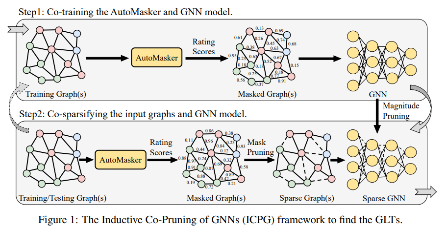</p>
<p>本文提出了一个AutoMasker，具体而言，他设计了一套网络用来生成mask的选择。</p>
<p>它使用一个GNN $g(·)$来获取每个节点的 representations。</p>
<p>$H=g(A,X)$</p>
<p>每一行代表着节点的representation。故可由计算节点的重要性，<br>$$<br>s_{ij}=\sigma{(\alpha_{ij})},a_{ij} = MLP([h_i,h_j])<br>$$</p>
<p>对于图，我们采用AutoMasker来预测每个图的所有边的重要性。然后根据掩码值对某图的边进行排序，对最小值为5%的边进行剪接，得到二值图掩码mG。</p>
<p>对于GNN，我们根据权重量级对参数进行排序，并对最低量级的参数进行20%的修剪，得到二值模型掩码mΘ。在当前的稀疏度水平下，我们现在成功地得到了模型的稀疏化图g0 = (mG A, X)和稀疏化掩码mΘ。</p>
<p>最后，我们需要检查稀疏性是否满足我们的条件。如果满足稀疏性，则算法完成;如果没有，我们需要重用找到的GLT来更新原始图和GNN模型，并迭代使用步骤1和步骤2(图1中虚线箭头)，直到满足条件。</p>
<p>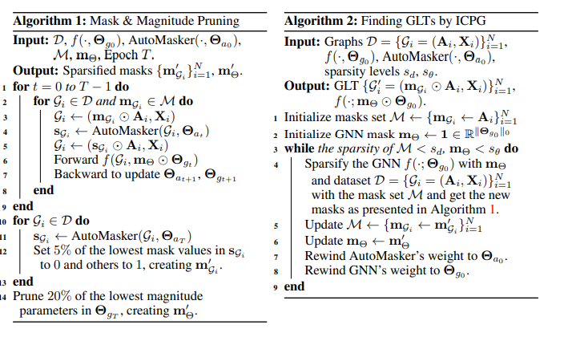</p>
<h3 id="代码-3"><a href="#代码-3" class="headerlink" title="代码"></a>代码</h3><h4 id="模型代码"><a href="#模型代码" class="headerlink" title="模型代码"></a>模型代码</h4><p>GAT:</p>
<figure class="highlight python"><table><tr><td class="gutter"><pre><span class="line">1</span><br><span class="line">2</span><br><span class="line">3</span><br><span class="line">4</span><br><span class="line">5</span><br><span class="line">6</span><br><span class="line">7</span><br><span class="line">8</span><br><span class="line">9</span><br><span class="line">10</span><br><span class="line">11</span><br><span class="line">12</span><br><span class="line">13</span><br><span class="line">14</span><br></pre></td><td class="code"><pre><span class="line"><span class="class"><span class="keyword">class</span> <span class="title">GATNet</span>(<span class="params">torch.nn.Module</span>):</span></span><br><span class="line">    <span class="function"><span class="keyword">def</span> <span class="title">__init__</span>(<span class="params">self, train_dataset</span>):</span></span><br><span class="line">        <span class="built_in">super</span>(GATNet, self).__init__()</span><br><span class="line">        self.conv1 = GATConv(train_dataset.num_features, <span class="number">256</span>, heads=<span class="number">4</span>)</span><br><span class="line">        self.lin1 = torch.nn.Linear(train_dataset.num_features, <span class="number">4</span> * <span class="number">256</span>)</span><br><span class="line">        self.conv2 = GATConv(<span class="number">4</span> * <span class="number">256</span>, <span class="number">256</span>, heads=<span class="number">4</span>)</span><br><span class="line">        self.lin2 = torch.nn.Linear(<span class="number">4</span> * <span class="number">256</span>, <span class="number">4</span> * <span class="number">256</span>)</span><br><span class="line">        self.conv3 = GATConv(<span class="number">4</span> * <span class="number">256</span>, train_dataset.num_classes, heads=<span class="number">6</span>, concat=<span class="literal">False</span>)</span><br><span class="line">        self.lin3 = torch.nn.Linear(<span class="number">4</span> * <span class="number">256</span>, train_dataset.num_classes)</span><br><span class="line">    <span class="function"><span class="keyword">def</span> <span class="title">forward</span>(<span class="params">self, x, edge_index, data_mask=<span class="literal">None</span></span>):</span></span><br><span class="line">        x = F.elu(self.conv1(x, edge_index, edge_weight=data_mask) + self.lin1(x))</span><br><span class="line">        x = F.elu(self.conv2(x, edge_index, edge_weight=data_mask) + self.lin2(x))</span><br><span class="line">        x = self.conv3(x, edge_index, edge_weight=data_mask) + self.lin3(x)</span><br><span class="line">        <span class="keyword">return</span> x</span><br></pre></td></tr></table></figure>

<p>Masker</p>
<figure class="highlight python"><table><tr><td class="gutter"><pre><span class="line">1</span><br><span class="line">2</span><br><span class="line">3</span><br><span class="line">4</span><br><span class="line">5</span><br><span class="line">6</span><br><span class="line">7</span><br><span class="line">8</span><br><span class="line">9</span><br><span class="line">10</span><br><span class="line">11</span><br><span class="line">12</span><br><span class="line">13</span><br><span class="line">14</span><br><span class="line">15</span><br><span class="line">16</span><br><span class="line">17</span><br><span class="line">18</span><br><span class="line">19</span><br><span class="line">20</span><br><span class="line">21</span><br><span class="line">22</span><br><span class="line">23</span><br></pre></td><td class="code"><pre><span class="line"><span class="class"><span class="keyword">class</span> <span class="title">Masker</span>(<span class="params">torch.nn.Module</span>):</span></span><br><span class="line">    <span class="function"><span class="keyword">def</span> <span class="title">__init__</span>(<span class="params">self, train_dataset, hidden=<span class="number">128</span></span>):</span></span><br><span class="line">        <span class="built_in">super</span>(Masker, self).__init__()</span><br><span class="line">        self.conv1 = GATConv(train_dataset.num_features, hidden, heads=<span class="number">4</span>)</span><br><span class="line">        self.lin1 = torch.nn.Linear(train_dataset.num_features, <span class="number">4</span> * hidden)</span><br><span class="line">        self.conv2 = GATConv(<span class="number">4</span> * hidden, hidden, heads=<span class="number">4</span>)</span><br><span class="line">        self.lin2 = torch.nn.Linear(<span class="number">4</span> * hidden, <span class="number">4</span> * hidden)</span><br><span class="line">        self.conv3 = GATConv(<span class="number">4</span> * hidden, hidden, heads=<span class="number">6</span>, concat=<span class="literal">False</span>)</span><br><span class="line">        self.lin3 = torch.nn.Linear(<span class="number">4</span> * hidden, hidden)</span><br><span class="line">        self.mlp = torch.nn.Linear(hidden * <span class="number">2</span>, <span class="number">1</span>)</span><br><span class="line">        self.sigmoid = torch.nn.Sigmoid()</span><br><span class="line">    <span class="function"><span class="keyword">def</span> <span class="title">forward</span>(<span class="params">self, x, edge_index</span>):</span></span><br><span class="line">        x = F.elu(self.conv1(x, edge_index) + self.lin1(x))</span><br><span class="line">        x = F.elu(self.conv2(x, edge_index) + self.lin2(x))</span><br><span class="line">        x = self.conv3(x, edge_index) + self.lin3(x)</span><br><span class="line">        link_score = self.concat_mlp_score(x, edge_index)</span><br><span class="line">        <span class="keyword">return</span> link_score</span><br><span class="line">    <span class="function"><span class="keyword">def</span> <span class="title">concat_mlp_score</span>(<span class="params">self, x, edge_index</span>):</span></span><br><span class="line">        row, col = edge_index</span><br><span class="line">        link_score = torch.cat((x[row], x[col]), dim=<span class="number">1</span>)</span><br><span class="line">        link_score = self.mlp(link_score)</span><br><span class="line">        link_score = self.sigmoid(link_score).view(-<span class="number">1</span>)</span><br><span class="line">        <span class="keyword">return</span> link_score</span><br></pre></td></tr></table></figure>

<p>GAT和Masker相比，masker的隐藏层更小，多了inner_product_score（上文省略了）和concat_mlp_score的函数。GAT最后一层是分类器，Masker最后一层输出边的分数。</p>
<h4 id="训练过程"><a href="#训练过程" class="headerlink" title="训练过程"></a>训练过程</h4><figure class="highlight python"><table><tr><td class="gutter"><pre><span class="line">1</span><br><span class="line">2</span><br><span class="line">3</span><br><span class="line">4</span><br><span class="line">5</span><br><span class="line">6</span><br><span class="line">7</span><br><span class="line">8</span><br><span class="line">9</span><br><span class="line">10</span><br><span class="line">11</span><br><span class="line">12</span><br><span class="line">13</span><br><span class="line">14</span><br><span class="line">15</span><br><span class="line">16</span><br><span class="line">17</span><br><span class="line">18</span><br><span class="line">19</span><br><span class="line">20</span><br><span class="line">21</span><br><span class="line">22</span><br><span class="line">23</span><br></pre></td><td class="code"><pre><span class="line">optimizer = torch.optim.Adam([&#123;<span class="string">&#x27;params&#x27;</span>: model.parameters(), <span class="string">&#x27;lr&#x27;</span>: <span class="number">0.005</span>&#125;,</span><br><span class="line">                                  &#123;<span class="string">&#x27;params&#x27;</span>: masker.parameters(), <span class="string">&#x27;lr&#x27;</span>: masker_lr&#125;])<span class="comment">#不同学习率</span></span><br><span class="line"><span class="comment">####省略</span></span><br><span class="line"><span class="keyword">for</span> epoch <span class="keyword">in</span> <span class="built_in">range</span>(<span class="number">1</span>, total_epoch + <span class="number">1</span>):</span><br><span class="line">        loss, mask_distribution = train_model_and_masker(model, masker, optimizer, train_loader)</span><br><span class="line">        <span class="comment">##评估省略</span></span><br><span class="line">pruning.pruning_model(model, <span class="number">0.2</span>, random=<span class="literal">False</span>)</span><br><span class="line">_ = pruning.see_zero_rate(model)</span><br><span class="line">model_mask_dict = pruning.extract_mask(model)</span><br><span class="line"></span><br><span class="line">masker.load_state_dict(best_masker_state_dict)</span><br><span class="line">pruning.grad_model(masker, <span class="literal">False</span>)</span><br><span class="line"></span><br><span class="line">train_dataset_pru = pruning.masker_pruning_dataset(train_dataset_pru, masker, <span class="number">1</span>, <span class="number">0.05</span>)</span><br><span class="line">val_dataset_pru = pruning.masker_pruning_dataset(val_dataset_pru, masker, <span class="number">2</span>, <span class="number">0.05</span>)</span><br><span class="line">test_dataset_pru = pruning.masker_pruning_dataset(test_dataset_pru, masker, <span class="number">2</span>, <span class="number">0.05</span>)</span><br><span class="line"><span class="comment">##省略print</span></span><br><span class="line">things_dict[<span class="string">&#x27;train_dataset_pru&#x27;</span>] = train_dataset_pru </span><br><span class="line">things_dict[<span class="string">&#x27;val_dataset_pru&#x27;</span>] = val_dataset_pru </span><br><span class="line">things_dict[<span class="string">&#x27;test_dataset_pru&#x27;</span>] = test_dataset_pru </span><br><span class="line">things_dict[<span class="string">&#x27;rewind_weight&#x27;</span>] = rewind_weight</span><br><span class="line">things_dict[<span class="string">&#x27;rewind_weight2&#x27;</span>] = rewind_weight2</span><br><span class="line">things_dict[<span class="string">&#x27;model_mask_dict&#x27;</span>] = model_mask_dict</span><br></pre></td></tr></table></figure>

<h5 id="train-model-and-masker函数"><a href="#train-model-and-masker函数" class="headerlink" title="train_model_and_masker函数"></a>train_model_and_masker函数</h5><figure class="highlight python"><table><tr><td class="gutter"><pre><span class="line">1</span><br><span class="line">2</span><br><span class="line">3</span><br><span class="line">4</span><br><span class="line">5</span><br><span class="line">6</span><br><span class="line">7</span><br><span class="line">8</span><br><span class="line">9</span><br><span class="line">10</span><br><span class="line">11</span><br><span class="line">12</span><br><span class="line">13</span><br><span class="line">14</span><br><span class="line">15</span><br><span class="line">16</span><br><span class="line">17</span><br></pre></td><td class="code"><pre><span class="line">loss_op = torch.nn.BCEWithLogitsLoss()</span><br><span class="line"><span class="function"><span class="keyword">def</span> <span class="title">train_model_and_masker</span>(<span class="params">model, masker, optimizer, train_loader</span>):</span></span><br><span class="line">	<span class="comment">###省略</span></span><br><span class="line">    total_loss = <span class="number">0</span></span><br><span class="line">    mask_distribution = []</span><br><span class="line">    <span class="keyword">for</span> data <span class="keyword">in</span> train_loader:</span><br><span class="line">        data = data.to(device)</span><br><span class="line">        optimizer.zero_grad()</span><br><span class="line">        data_mask = masker(data.x, data.edge_index)</span><br><span class="line">        mask_distribution.append(pruning.plot_mask(data_mask))</span><br><span class="line">        out = model(data.x, data.edge_index, data_mask)</span><br><span class="line">        loss = loss_op(out, data.y)</span><br><span class="line">        total_loss += loss.item() * data.num_graphs</span><br><span class="line">        loss.backward()</span><br><span class="line">        optimizer.step()</span><br><span class="line">    mask_distribution = torch.tensor(mask_distribution).mean(dim=<span class="number">0</span>)</span><br><span class="line">    <span class="keyword">return</span> total_loss / <span class="built_in">len</span>(train_loader.dataset), mask_distribution</span><br></pre></td></tr></table></figure>

<p>和UGS的过程其实差不多，权重=mask*权重，使用CEloss进行训练。UGS的mask为网络中的参数，而该算法的mask则由另一套神经网络生成。</p>
<h5 id="pruning-model"><a href="#pruning-model" class="headerlink" title="pruning_model"></a>pruning_model</h5><p>本部分使用了pytorch 的torch.nn.utils.prune</p>
<figure class="highlight python"><table><tr><td class="gutter"><pre><span class="line">1</span><br><span class="line">2</span><br><span class="line">3</span><br><span class="line">4</span><br><span class="line">5</span><br><span class="line">6</span><br><span class="line">7</span><br><span class="line">8</span><br><span class="line">9</span><br><span class="line">10</span><br><span class="line">11</span><br><span class="line">12</span><br><span class="line">13</span><br><span class="line">14</span><br><span class="line">15</span><br><span class="line">16</span><br><span class="line">17</span><br><span class="line">18</span><br><span class="line">19</span><br><span class="line">20</span><br><span class="line">21</span><br><span class="line">22</span><br><span class="line">23</span><br></pre></td><td class="code"><pre><span class="line"><span class="function"><span class="keyword">def</span> <span class="title">pruning_model</span>(<span class="params">model, px, random=<span class="literal">False</span></span>):</span></span><br><span class="line">    <span class="keyword">if</span> px == <span class="number">0</span>:</span><br><span class="line">        <span class="keyword">pass</span></span><br><span class="line">    <span class="keyword">else</span>:</span><br><span class="line">        parameters_to_prune =[]</span><br><span class="line">        <span class="keyword">for</span> m <span class="keyword">in</span> model.modules():</span><br><span class="line">            <span class="keyword">if</span> <span class="built_in">isinstance</span>(m, nn.Linear):</span><br><span class="line">                parameters_to_prune.append((m,<span class="string">&#x27;weight&#x27;</span>))</span><br><span class="line">                <span class="comment"># print(m)</span></span><br><span class="line">        </span><br><span class="line">        parameters_to_prune = <span class="built_in">tuple</span>(parameters_to_prune)</span><br><span class="line">        <span class="keyword">if</span> random:</span><br><span class="line">            prune.global_unstructured(</span><br><span class="line">                parameters_to_prune,</span><br><span class="line">                pruning_method=prune.RandomUnstructured,</span><br><span class="line">                amount=px,</span><br><span class="line">            )</span><br><span class="line">        <span class="keyword">else</span>:</span><br><span class="line">            prune.global_unstructured(</span><br><span class="line">                parameters_to_prune,</span><br><span class="line">                pruning_method=prune.L1Unstructured,</span><br><span class="line">                amount=px,</span><br><span class="line">            )</span><br></pre></td></tr></table></figure>

<blockquote>
<p>L1：基于权重绝对值</p>
<p>random：完全随机</p>
</blockquote>
<h5 id="grad-model"><a href="#grad-model" class="headerlink" title="grad_model"></a>grad_model</h5><p>源代码为<code>pruning.grad_model(masker, False)</code>，冻结梯度</p>
<figure class="highlight python"><table><tr><td class="gutter"><pre><span class="line">1</span><br><span class="line">2</span><br><span class="line">3</span><br></pre></td><td class="code"><pre><span class="line"><span class="function"><span class="keyword">def</span> <span class="title">grad_model</span>(<span class="params">model, fix=<span class="literal">True</span></span>):</span></span><br><span class="line">    <span class="keyword">for</span> name, param <span class="keyword">in</span> model.named_parameters():</span><br><span class="line">        param.requires_grad = fix</span><br></pre></td></tr></table></figure>
 
      <!-- reward -->
      
    </div>
    

    <!-- copyright -->
    
    <footer class="article-footer">
       
<div class="share-btn">
      <span class="share-sns share-outer">
        <i class="ri-share-forward-line"></i>
        分享
      </span>
      <div class="share-wrap">
        <i class="arrow"></i>
        <div class="share-icons">
          
          <a class="weibo share-sns" href="javascript:;" data-type="weibo">
            <i class="ri-weibo-fill"></i>
          </a>
          <a class="weixin share-sns wxFab" href="javascript:;" data-type="weixin">
            <i class="ri-wechat-fill"></i>
          </a>
          <a class="qq share-sns" href="javascript:;" data-type="qq">
            <i class="ri-qq-fill"></i>
          </a>
          <a class="douban share-sns" href="javascript:;" data-type="douban">
            <i class="ri-douban-line"></i>
          </a>
          <!-- <a class="qzone share-sns" href="javascript:;" data-type="qzone">
            <i class="icon icon-qzone"></i>
          </a> -->
          
          <a class="facebook share-sns" href="javascript:;" data-type="facebook">
            <i class="ri-facebook-circle-fill"></i>
          </a>
          <a class="twitter share-sns" href="javascript:;" data-type="twitter">
            <i class="ri-twitter-fill"></i>
          </a>
          <a class="google share-sns" href="javascript:;" data-type="google">
            <i class="ri-google-fill"></i>
          </a>
        </div>
      </div>
</div>

<div class="wx-share-modal">
    <a class="modal-close" href="javascript:;"><i class="ri-close-circle-line"></i></a>
    <p>扫一扫，分享到微信</p>
    <div class="wx-qrcode">
      
    </div>
</div>

<div id="share-mask"></div>  
    </footer>
  </div>

   
  <nav class="article-nav">
    
      <a href="/2024/20240605/" class="article-nav-link">
        <strong class="article-nav-caption">上一篇</strong>
        <div class="article-nav-title">
          
            Softmax Linear Units Softmax
          
        </div>
      </a>
    
    
      <a href="/2024/20240516/" class="article-nav-link">
        <strong class="article-nav-caption">下一篇</strong>
        <div class="article-nav-title">MambaOut-Do We Really Need Mamba for Vision?</div>
      </a>
    
  </nav>

   
 
   
     
</article>

</section>
      <footer class="footer">
  <div class="outer">
    <ul>
      <li>
        Copyrights &copy;
        2019-2024
        <i class="ri-heart-fill heart_icon"></i> LJX
      </li>
    </ul>
    <ul>
      <li>
        
        
        
        Powered by <a href="https://hexo.io" target="_blank">Hexo</a>
        <span class="division">|</span>
        Theme - <a href="https://github.com/Shen-Yu/hexo-theme-ayer" target="_blank">Ayer</a>
        
      </li>
    </ul>
    <ul>
      <li>
        
        
        <span>
  <span><i class="ri-user-3-fill"></i>Visitors:<span id="busuanzi_value_site_uv"></span></span>
  <span class="division">|</span>
  <span><i class="ri-eye-fill"></i>Views:<span id="busuanzi_value_page_pv"></span></span>
</span>
        
      </li>
    </ul>
    <ul>
      
    </ul>
    <ul>
      
    </ul>
    <ul>
      <li>
        <!-- cnzz统计 -->
        
        <script type="text/javascript" src='https://s9.cnzz.com/z_stat.php?id=1278069914&amp;web_id=1278069914'></script>
        
      </li>
    </ul>
  </div>
</footer>    
    </main>
    <div class="float_btns">
      <div class="totop" id="totop">
  <i class="ri-arrow-up-line"></i>
</div>

<div class="todark" id="todark">
  <i class="ri-moon-line"></i>
</div>

    </div>
    <aside class="sidebar on">
      <button class="navbar-toggle"></button>
<nav class="navbar">
  
  <div class="logo">
    <a href="/"></a>
  </div>
  
  <ul class="nav nav-main">
    
    <li class="nav-item">
      <a class="nav-item-link" href="/">主页</a>
    </li>
    
    <li class="nav-item">
      <a class="nav-item-link" href="/archives">目录</a>
    </li>
    
    <li class="nav-item">
      <a class="nav-item-link" href="/about">关于本站</a>
    </li>
    
    <li class="nav-item">
      <a class="nav-item-link" href="/about_me">关于我</a>
    </li>
    
    <li class="nav-item">
      <a class="nav-item-link" href="/photos">人间烟火</a>
    </li>
    
    <li class="nav-item">
      <a class="nav-item-link" target="_blank" rel="noopener" href="https://act18l.github.io/">欧拉计划</a>
    </li>
    
  </ul>
</nav>
<nav class="navbar navbar-bottom">
  <ul class="nav">
    <li class="nav-item">
      
      <a class="nav-item-link nav-item-search"  title="Search">
        <i class="ri-search-line"></i>
      </a>
      
      
    </li>
  </ul>
</nav>
<div class="search-form-wrap">
  <div class="local-search local-search-plugin">
  <input type="search" id="local-search-input" class="local-search-input" placeholder="Search...">
  <div id="local-search-result" class="local-search-result"></div>
</div>
</div>
    </aside>
    <div id="mask"></div>

<!-- #reward -->
<div id="reward">
  <span class="close"><i class="ri-close-line"></i></span>
  <p class="reward-p"><i class="ri-cup-line"></i>请我喝杯咖啡吧~</p>
  <div class="reward-box">
    
    <div class="reward-item">
      
      <span class="reward-type">支付宝</span>
    </div>
    
    
    <div class="reward-item">
      
      <span class="reward-type">微信</span>
    </div>
    
  </div>
</div>
    
<script src="/js/jquery-3.6.0.min.js"></script>
 
<script src="/js/lazyload.min.js"></script>

<!-- Tocbot -->
 
<script src="/js/tocbot.min.js"></script>

<script>
  tocbot.init({
    tocSelector: ".tocbot",
    contentSelector: ".article-entry",
    headingSelector: "h1, h2, h3, h4, h5, h6",
    hasInnerContainers: true,
    scrollSmooth: true,
    scrollContainer: "main",
    positionFixedSelector: ".tocbot",
    positionFixedClass: "is-position-fixed",
    fixedSidebarOffset: "auto",
  });
</script>

<script src="https://cdn.staticfile.org/jquery-modal/0.9.2/jquery.modal.min.js"></script>
<link
  rel="stylesheet"
  href="https://cdn.staticfile.org/jquery-modal/0.9.2/jquery.modal.min.css"
/>
<script src="https://cdn.staticfile.org/justifiedGallery/3.8.1/js/jquery.justifiedGallery.min.js"></script>

<script src="/dist/main.js"></script>

<!-- ImageViewer -->
 <!-- Root element of PhotoSwipe. Must have class pswp. -->
<div class="pswp" tabindex="-1" role="dialog" aria-hidden="true">

    <!-- Background of PhotoSwipe. 
         It's a separate element as animating opacity is faster than rgba(). -->
    <div class="pswp__bg"></div>

    <!-- Slides wrapper with overflow:hidden. -->
    <div class="pswp__scroll-wrap">

        <!-- Container that holds slides. 
            PhotoSwipe keeps only 3 of them in the DOM to save memory.
            Don't modify these 3 pswp__item elements, data is added later on. -->
        <div class="pswp__container">
            <div class="pswp__item"></div>
            <div class="pswp__item"></div>
            <div class="pswp__item"></div>
        </div>

        <!-- Default (PhotoSwipeUI_Default) interface on top of sliding area. Can be changed. -->
        <div class="pswp__ui pswp__ui--hidden">

            <div class="pswp__top-bar">

                <!--  Controls are self-explanatory. Order can be changed. -->

                <div class="pswp__counter"></div>

                <button class="pswp__button pswp__button--close" title="Close (Esc)"></button>

                <button class="pswp__button pswp__button--share" style="display:none" title="Share"></button>

                <button class="pswp__button pswp__button--fs" title="Toggle fullscreen"></button>

                <button class="pswp__button pswp__button--zoom" title="Zoom in/out"></button>

                <!-- Preloader demo http://codepen.io/dimsemenov/pen/yyBWoR -->
                <!-- element will get class pswp__preloader--active when preloader is running -->
                <div class="pswp__preloader">
                    <div class="pswp__preloader__icn">
                        <div class="pswp__preloader__cut">
                            <div class="pswp__preloader__donut"></div>
                        </div>
                    </div>
                </div>
            </div>

            <div class="pswp__share-modal pswp__share-modal--hidden pswp__single-tap">
                <div class="pswp__share-tooltip"></div>
            </div>

            <button class="pswp__button pswp__button--arrow--left" title="Previous (arrow left)">
            </button>

            <button class="pswp__button pswp__button--arrow--right" title="Next (arrow right)">
            </button>

            <div class="pswp__caption">
                <div class="pswp__caption__center"></div>
            </div>

        </div>

    </div>

</div>

<link rel="stylesheet" href="https://cdn.staticfile.org/photoswipe/4.1.3/photoswipe.min.css">
<link rel="stylesheet" href="https://cdn.staticfile.org/photoswipe/4.1.3/default-skin/default-skin.min.css">
<script src="https://cdn.staticfile.org/photoswipe/4.1.3/photoswipe.min.js"></script>
<script src="https://cdn.staticfile.org/photoswipe/4.1.3/photoswipe-ui-default.min.js"></script>

<script>
    function viewer_init() {
        let pswpElement = document.querySelectorAll('.pswp')[0];
        let $imgArr = document.querySelectorAll(('.article-entry img:not(.reward-img)'))

        $imgArr.forEach(($em, i) => {
            $em.onclick = () => {
                // slider展开状态
                // todo: 这样不好，后面改成状态
                if (document.querySelector('.left-col.show')) return
                let items = []
                $imgArr.forEach(($em2, i2) => {
                    let img = $em2.getAttribute('data-idx', i2)
                    let src = $em2.getAttribute('data-target') || $em2.getAttribute('src')
                    let title = $em2.getAttribute('alt')
                    // 获得原图尺寸
                    const image = new Image()
                    image.src = src
                    items.push({
                        src: src,
                        w: image.width || $em2.width,
                        h: image.height || $em2.height,
                        title: title
                    })
                })
                var gallery = new PhotoSwipe(pswpElement, PhotoSwipeUI_Default, items, {
                    index: parseInt(i)
                });
                gallery.init()
            }
        })
    }
    viewer_init()
</script> 
<!-- MathJax -->
 <script type="text/x-mathjax-config">
  MathJax.Hub.Config({
      tex2jax: {
          inlineMath: [ ['$','$'], ["\\(","\\)"]  ],
          processEscapes: true,
          skipTags: ['script', 'noscript', 'style', 'textarea', 'pre', 'code']
      }
  });

  MathJax.Hub.Queue(function() {
      var all = MathJax.Hub.getAllJax(), i;
      for(i=0; i < all.length; i += 1) {
          all[i].SourceElement().parentNode.className += ' has-jax';
      }
  });
</script>

<script src="https://cdn.staticfile.org/mathjax/2.7.7/MathJax.js"></script>
<script src="https://cdn.staticfile.org/mathjax/2.7.7/config/TeX-AMS-MML_HTMLorMML-full.js"></script>
<script>
  var ayerConfig = {
    mathjax: true,
  };
</script>

<!-- Katex -->
 
    
        <link rel="stylesheet" href="https://cdn.staticfile.org/KaTeX/0.15.1/katex.min.css">
        <script src="https://cdn.staticfile.org/KaTeX/0.15.1/katex.min.js"></script>
        <script src="https://cdn.staticfile.org/KaTeX/0.15.1/contrib/auto-render.min.js"></script>
        
    
 
<!-- busuanzi  -->
 
<script src="/js/busuanzi-2.3.pure.min.js"></script>
 
<!-- ClickLove -->

<!-- ClickBoom1 -->

<!-- ClickBoom2 -->

<!-- CodeCopy -->
 
<link rel="stylesheet" href="/css/clipboard.css">
 <script src="https://cdn.staticfile.org/clipboard.js/2.0.10/clipboard.min.js"></script>
<script>
  function wait(callback, seconds) {
    var timelag = null;
    timelag = window.setTimeout(callback, seconds);
  }
  !function (e, t, a) {
    var initCopyCode = function(){
      var copyHtml = '';
      copyHtml += '<button class="btn-copy" data-clipboard-snippet="">';
      copyHtml += '<i class="ri-file-copy-2-line"></i><span>COPY</span>';
      copyHtml += '</button>';
      $(".highlight .code pre").before(copyHtml);
      $(".article pre code").before(copyHtml);
      var clipboard = new ClipboardJS('.btn-copy', {
        target: function(trigger) {
          return trigger.nextElementSibling;
        }
      });
      clipboard.on('success', function(e) {
        let $btn = $(e.trigger);
        $btn.addClass('copied');
        let $icon = $($btn.find('i'));
        $icon.removeClass('ri-file-copy-2-line');
        $icon.addClass('ri-checkbox-circle-line');
        let $span = $($btn.find('span'));
        $span[0].innerText = 'COPIED';
        
        wait(function () { // 等待两秒钟后恢复
          $icon.removeClass('ri-checkbox-circle-line');
          $icon.addClass('ri-file-copy-2-line');
          $span[0].innerText = 'COPY';
        }, 2000);
      });
      clipboard.on('error', function(e) {
        e.clearSelection();
        let $btn = $(e.trigger);
        $btn.addClass('copy-failed');
        let $icon = $($btn.find('i'));
        $icon.removeClass('ri-file-copy-2-line');
        $icon.addClass('ri-time-line');
        let $span = $($btn.find('span'));
        $span[0].innerText = 'COPY FAILED';
        
        wait(function () { // 等待两秒钟后恢复
          $icon.removeClass('ri-time-line');
          $icon.addClass('ri-file-copy-2-line');
          $span[0].innerText = 'COPY';
        }, 2000);
      });
    }
    initCopyCode();
  }(window, document);
</script>
 
<!-- CanvasBackground -->
 
<script src="/js/dz.js"></script>
 
<script>
  if (window.mermaid) {
    mermaid.initialize({ theme: "forest" });
  }
</script>


    
    

  </div>
</body>

</html>